STAGES TO SATURN
Page
VII. EPILOGUE 379
13. Legacies 381
APPENDIX A— SCHEMATIC OF SATURN V 405
APPENDIX B— SATURN V PRELAUNCH-LAUNCH SEQUENCE 407
APPENDIX C— SATURN FLIGHT HISTORY 413
APPENDIX D— SATURN R&D FUNDING HISTORY 421
APPENDIX E— SATURN V CONTRACTORS 423
APPENDIX F— LOCATION OF REMAINING SATURN HARDWARE — 439 APPENDIX G—NASA ORGANIZATION DURING APOLLO-SATURN ... 441
APPENDIX H—MSFC PERSONNEL DURING APOLLO-SATURN 449
NOTES 457
SOURCES AND RESEARCH MATERIAL 493
INDEX . 501
Illustrations
Page
Frontispiece—the Saturn V at LC-39 ii
Seven photos of Apollo 11 mission 6
Photo of Robert Goddard 10
Photo of German rocket pioneers 10
Four photos of early rockets in the U.S 16
Wernher von Braun with the first seven astronauts 20
Launch of Alan Shepard on Mercury-Redstone 20
Scale comparison of U.S. manned space flight vehicles 20
Development of Saturn concepts 28
Saturn I with Mercury-Redstone and Juno II 30
President Eisenhower with first NASA Administrator T. Keith Glennan and
Deputy Administrator Hugh Dryden 32
Wernher von Braun with his ABMA senior staff 38
President Eisenhower dedicates the George C. Marshall Space Flight Center 43
Abe Silverstein tours rocket facility 46
Two summary charts from the Silverstein Report 49
Early versions of the Saturn C-1 and C-5 60
The stable of NASA launch vehicles 61
John Houbolt and Lunar Orbit Rendezvous 64
President Kennedy at MSFC 68
Four aerial views of MSFC 71
Photos of Michoud Operations and Mississippi Test Facility ,75
Saturn I design and manufacture 82
Saturn IB design and manufacture 84
viil
Page
Saturn engine applications 90
Turbopump for the H-1 engine 94
Specifics and systems of the H-l engine 100
Firing and manufacture of the H-l engine 105
Specifics and schematic of the F-1 engine 110
Engine start sequence for the S-IC stage Ill
F-l engine injector plate and turbopump 117
F-l thrust chamber and brazing furnace 122
F-l test stand 125
F-l engine production line 126
Centaur stage with two RL-10 engines 136
RL-10 engine specifics and systems; engine cluster mounted in the S-IV
stage of Saturn I 139
J-2 engine specifics, systems, assembly, and testing 151
Saturn S-IV stages 161
Seven photos of manufacturing the S-IVB stage 169
Comparison of S-IVB stages of Saturn IB and V 179
S-IVB stage rollout and testing 187
S-IC stage Saturn V launch vehicle 197
Five photos of skin fabrication for the S-IC stage 204
Six photos of assembly and testing of the S-IC stage 208
Seven photos of fabrication and assembly of the S-II stage 220
The mission control center at KSC 236
ST-124 inertial guidance platform 244
Instrument unit specifics, systems, and assembly 246
Wernher von Braun is briefed by Mathias Siebel 262
Saturn program major sites 268
Saturn contractors 268
Two organization charts of Saturn V program 272
Photo of Arthur Rudolph 273
NASA Office of Manned Space Flight Management Council 277
Manned Space Flight Awareness Program 279
Photo of MSFC's Saturn V program control center 286
S-IC flight stage at MSFC on its transporter 300
S-II stage on its transporter 303
Five photos of the NASA barge fleet 306
Four photos of Saturn air transport 316
USNS Point Barrow 319
Saturn transportation equipment 319
Three views of Saturn I test flights 326
Two views of Pegasus payloads for Saturn I 333
Cutaway drawing and two views of the Saturn IB launch vehicle 342
AS-501, first flight-ready Saturn V 343
Launch Complex 39 356
Mobile Service Structures at LC 39 365
Apollo 8 367
Apollo 11 in flight; control room after launch; Astronaut Edwin Aldrin
prepares to step onto lunar surface; lunar sample chest 373
Apollo 17 lunar roving vehicle 377
Commonality of Saturn hardware 380
Two photos of Saturn and Skylab 385
Two views of Saturn and the Apollo-Soyuz Test Mission 389
Four photos of Huntsville, Alabama 395
ix
Foreword
Few of man's technological endeavors compare in scope of significance to the development of the Saturn family of launch vehicles.
At the time of this writing in 1979, we may still be too close to the project to see it objectively from the perspective of history, but I expect that future historians will compare the development of Saturn to such great and imaginative projects as the building of the Panama Canal and to such latter day technological achievements as the Manhattan Project. In terms of both vision and achievement, Saturn may surpass them all.
It was as if the Wright Brothers had gone from building their original Wright Flyer in 1903 to developing a supersonic Concorde in 1913. Unimaginable; yet in 10 short years the builders of Saturn progressed from the small, single-engine rockets like Redstone to the giant vehicle with clustered engines that put man on the moon. Our Earth-to-orbit weight-lifting capability grew in that decade by 10 thousand times.
Saturn was an engineering masterpiece. The ultimate Saturn, taller than the Statue of Liberty, had a takeoff weight that exceeded that of 25 fully loaded jet airliners, and produced as much power as 85 Hoover Dams.
The Saturn program was also a masterpiece of management. There are those who hold that one of the principal benefits this country derived from the Apollo-Saturn lunar landing program was the development of a new and extraordinary management approach through which the National Aeronautics and Space Administration directed vast human and material resources toward a common purpose. The system that was developed to meet the incredible complexities of the program, taking account of its pioneering nature and the time constraint imposed, provides a pattern for managing a broad spectrum of future technological, scientific, and social endeavors.
One of the most remarkable things about the Saturn program was its success rate. An early press release openly stated that because of the
STAGES TO SATURN
complexity of the system and the tremendous advancement in technology required, program officials fully expected half of the 10 Saturn I's launched to fail. None did. Neither did any Saturn IB, nor did any Saturn V, either test vehicle or operational rocket—and there were 32 Saturn launches in all.
The reliability assessment of the system was such that only two Saturn Vs were launched before the third sent Frank Borman's crew around the moon during Christmas of 1968. In all, 27 men went around the moon aboard Saturn-launched space vehicles, 12 actually walked on its surface.
Close on the heels of the lunar landing series, NASA developed Skylab, the world's first major laboratory in which we could operate experiments in the new environment of space. The Saturn again played a pivotal role in this enterprise—the core component of the Skylab itself being a modified Saturn stage. Only a Saturn V could lift the huge laboratory into orbit, which, when an Apollo spacecraft was annexed, weighed 100 metric tons and was 36 meters long. The three crews, which inhabited the space station for a total time of nearly six months, were launched on the smaller Saturn IBs. The Saturn family made Skylab possible, so Saturn deserves a large share of the credit for the mission's success in establishing a broad foundation of scientific and technological knowledge.
Furthermore, we should not overlook the role Saturn played in the Apollo-Soyuz Test Project of 1975. It was another Saturn IB that carried an American crew to its historic rendezvous with two Soviet cosmonauts in orbit. The reliable Saturn gave NASA every confidence that its crew could ascend on schedule following the Soviet launch half a world away and make the time-critical union of those two small objects in space. We had a high level of confidence that this, the last Saturn, would perform with the same excellence as its 31 predecessors. It did not disappoint us.
It should be pointed out that the Apollo-Saturn program was a national achievement. It has been estimated that 20 000 private firms and 300 000 people participated in the development of this system. The challenge taxed American ingenuity to the extreme. The result, of course, was that American technology made the "giant leap" referred to by Neil Armstrong. Whole new industries were born, offering products that touch our everday lives in ways we could not have dreamed of just a decade before.
We may not soon again face a challenge to match the lunar landing, and it may be some time before we mount the kind of scientific and engineering effort that gave us Saturn. Whenever that next challenge comes, we have in the Apollo-Saturn program the basic blueprint for achieving success. It not only will point the way but will also give the confidence needed to undertake new and dramatic challenges.
Xll
FOREWORD
Among the other lessons learned from the development of Saturn is the evidence of how much a free society can do and how far a dedicated people can go when they are properly challenged, led, motivated, and supported.
This is our legacy from Saturn.
June 1979 William R. Lucas
Director, George C. Marshall Space Flight Center
Xltl
Preface
The gigantic Saturn V launch vehicle may well be the first and last of its kind. Subsequent space ventures will be based on new vehicles, such as the smaller, reusable Space Shuttle. Manned launches in the near future will be geared to orbital missions rather than planetary excursions, and unmanned deep-space missions will not demand the very high thrust boosters characteristic of the Apollo program. As the space program moves into the future, it also appears that the funding for elaborate "big booster" missions will not be forthcoming for NASA. The Saturn V class of launch vehicles are the end of the line of the Saturn generation. It is not likely that anything like them will ever be built again.
Because of the commanding drama of the awesome Saturn V, it is easy to forget the first Saturns—the Saturn I and Saturn IB. This history is an attempt to give due credit to these pioneering vehicles, to analyze the somewhat awkward origins of the Saturn I as a test bed for static testing only, not as an operational vehicle, and to discuss the uprated Saturn IB as an interim booster for the orbital testing of the first Apollo capsules. Evolution of the engines is also given considerable space early in the narrative. Because the Apollo-Saturn program was expected to put a man on the moon within a fixed time span, the use of available hardware was particularly attractive—an aspect of the program that is not generally appreciated by the public. The development of the early Saturn I and IB vehicles, as well as the engines, illustrates this approach. Inevitably, the unique nature of the mission called for advances in the state of the art, and the Saturn history includes some examples. One outstanding example is the development of high-energy liquid hydrogen engines. Other examples include the development of insulation for extended storage of large quantities of hydrogen in vehicle tanks and the advances in the computer technology of the guidance and control systems.
The development of Saturn was enormously expensive and time-consuming. Even given the expected costs of developments to advance the state of the art, why were the costs of the development time so great if
STAGES TO SATURN
the program still relied so much on existing hardware? Part of the answer involves the uniqueness of dimensions. Even a proven component, to be used in the huge Saturn, had to be scaled up in size. The larger component had to withstand a similar increase in the amount of punishment inflicted on it, and this fact opened up a whole new regime of operational headaches. The scaling up of components and systems for lunar missions seemed to involve geometrical progressions rather than simple arithmetic progressions. The F-l engines for the S-IC first stage graphically illustrate this difficulty. The size of the Saturn stages and engines also called for enlargement of test stands and other facilities, with attendant increases in time and costs. The logistical challenge assumed gargantuan proportions. The managers of the Apollo-Saturn programs also discovered unanticipated expenses in storing and maintaining exotic hardware that was subject to degradation unless constantly monitored, refurbished, and attended by additional cadres of technicians.
This book is a technological history. To many contemporaries the narrative may read too much like a technical manual, but the author's concern is for posterity, when the technical manuals may be lost or dispersed (as many are already) and knowledgeable participants have long since died. The narrative approach was largely predicated on questions that might well be asked by future generations: How were the Saturns made? How did they work? Two other histories, already published, deal with subjects keyed to the Apollo-Saturn program: (1) the development of the Apollo command and service modules along with the lunar module, and (2) the construction and operation of launch facilities at Cape Kennedy. These books contain much of the political and administrative struggles surrounding the origins and development of the Apollo program, and it would be redundant to retell the whole story for the Saturn history. I have therefore included only the background that seemed necessary to put the Saturn in proper perspective, and Part Two recapitulates the programmatic and administrative origins of Saturn. The bulk of the text is devoted to the theme of technological development. Even chapter 9, on management, is geared to the specifics of the technological management of Saturn vehicles.
The decision to treat the history of the Saturn program as a technological narrative shaped the nature of all sections of the book. So that some of the innovations and advances might be appreciated, it seemed advisable to include a brief historical overview of rocket technology. Against this background, I hope the Saturn story will stand out with greater clarity.
The narrative itself is organized into seven parts. The question was how to deal with the complexity of many simultaneous programs during the Saturn development that involved the various engines, stages, and associated equipment for three separate launch vehicles. A strict chronological organization seemed unnecessarily confusing. The topical approach,
PREFACE
although constructed in a loose chronological sequence, provided the opportunity to deal with the early technology involved in Saturn I and Saturn IB launch vehicles primarily in terms of the concept of clustering tanks and engines. The engines themselves, although they possessed inherent differences, evolved out of common principles of engine design and cryogenic technology. Dealing with these propulsion systems as a separate unit made the significance of their development stand out more clearly. Similarly, I analyzed the evolution of rocket stages as a unit and emphasized propellant tankage for the Saturn V vehicle. Although many early Saturn flights were concurrent with the research and development phases, all the launches are summarized in two chapters toward the end of the book. Just as the flights were the culmination of Apollo-Saturn, discussion of them all at the end of the narrative seemed logical.
The manned operations involving the spacecraft—the activities of the launch crews at liftoff—the role of the astronauts—these events involved discrete numbers of human actors. The inherent drama in launches and missions tended to spotlight the people involved. On the other hand, development of the Saturn launch vehicle rested on millions of hours of prior research and development and on thousands of designers, engineers, technicians, and specialists who worked behind the scenes. It was often impossible to single out a specific individual responsible for a specific achievement because most of the major decisions and breakthroughs resulted from elaborate team efforts. In fact, one veteran of the Marshall Space Flight Center told me that he preferred that the Saturn history not mention people at all. It was too hard, he explained, to isolate significant achievements without mentioning dozens of people who made successful contributions.
The launch vehicle, as dramatic as it was during liftoff, played a minor role in the total duration of a mission. It was visible to observers for only eight minutes or so as it blazed into orbit. The personnel of Houston's Mission Control and the astronaut crew occupied center stage for the lion's share of the lunar mission. For all the spectacular effects of the Saturn vehicle's awesome launch, most of the Saturn story deals with many years of unglamorous research, development, and test. It is a story of prior work: of nuts, bolts, and pyrotechnics—and that is the story I have tried to tell in these pages.
June 1979 R.E.B.
Houston
xvn
Acknowledgments
Dr. Rudolph Hermann, Director of the Research Institute of the University of Alabama at Huntsville (UAH), encouraged much of the early work of the Saturn history project. His successor, Dr. John F. Porter, Jr., and Dr. J. Edwin Rush, Director of Graduate Programs and Research at UAH, provided continuing encouragement and support.
Frederick I. Ordway III and David L. Christensen were primarily responsible for acquiring specialized documentation under the UAH contract. With unusual accuracy and efficiency, Mrs. M. L. Childress helped set up the documentary files and their annotated index and typed several early drafts of the history. John Stuart Beltz, one of the original historians on the project, drafted several "working papers" on aspects of the Saturn program that were helpful in preparing the final manuscript. Beltz conducted several interviews and acquired contractor documentation, particularly concerning the S-II stage of the Saturn V. Many long conversations with him helped shape this and other parts of the Saturn narrative. Mitchell R. Sharpe of George C. Marshall Space Flight Center developed working papers and bibliographies on early rocket history and assisted in acquiring materials on Saturn management (chapter 9) and the "all-up" launch of the first Saturn V (chapter 12).
At the MSFC Historical Office, David S. Akens, Leo L. Jones, and A. Ruth Jarrell offered continuous assistance. After the office was abolished, Robert G. Sheppard, Don Lakey, and Betty Davis helped fill requests for additional information and coordinated the distribution of preliminary copies of the manuscript within MSFC for editorial comment. Bonnie Holmes, in the MSFC Director's Office, provided invaluable help during a follow-up research visit to MSFC during the summer of 1975 and helped acquire photographs and drawings.
During the final phases of completing the manuscript, the documents of the Saturn history project were temporarily transferred to the Johnson Space Center (JSC) near the University of Houston/Clear Lake City (UH/CLC) campus. James M. Grimwood, JSC Historian, not only
STAGES TO SATURN
provided shelf space for these documents but also provided office facilities, access to the coffee pot, encouragement, and advice. My debt to him is considerable. I wish to thank Sally Gates and my other colleagues, also of JSC, at work on NASA histories: Edward and Linda Ezell and David Compton, whose interest and suggestions were unfailingly helpful. At UH/CLC, Dr. Calvin Cannon, Dean of Human Sciences and Humanities, and Dr. Peter Fischer, Director of Programs in Humanities, generously cooperated in arranging teaching duties to benefit research and writing. Special thanks go to Jean Sherwood and Myra Hewitt Young who worked so cheerfully and conscientiously in typing the manuscript.
Dr. Eugene M. Emme, of the History Office at NASA Headquarters in Washington, D.C., organized and guided the NASA historical program and monitored the Apollo-Saturn history effort. Lee Saegesser, archivist in the History Office, invariably turned up needed illustrations and documents. I owe a special debt, however, to Dr. Monte D. Wright, Director of the History Office, and Dr. Frank W. Anderson, Jr., Publications Manager, for their painstaking and thorough editing of early drafts of the manuscript. I learned much from their criticisms, and the manuscript, I trust, is much the better for their close attention to it. I would like to emphasize here that I have had complete freedom in interpreting the Saturn program in my own way. I was only cautioned at one point not to write in such a way to open myself to the charge of delivering a "company history."
Personnel from NASA and contractors' offices all over the United States diligently and graciously responded to requests for additional illustrations and documentation. Dozens of NASA and contractor personnel (the majority of whom still remain unknown to me) read various drafts of the manuscript and returned copies with suggestions and corrections. Since I cannot possibly identify and list all of them, I can only acknowledge my great obligation to their interest in this history of Saturn. Likewise, I want to acknowledge the cooperation extended by the dozens of NASA and contractor personnel who consented to interviews. As for any remaining errors of fact or interpretation, they are mine.
Portions of this text have appeared elsewhere, and I wish to acknowledge the following publications and editors for cooperation in incorporating revised versions in the present text: "Aircraft for the Space Age: The Guppy Series of Transports," Aerospace Historian (Summer 1974); "From the S-IV to the S-IVB: The Evolution of Rocket Stage for Space Exploration, "Journal of the British Interplanetary Society (December 1979); "To Make a Giant Leap: Rocket Engines for Manned Lunar Missions," in Kent Newmyer, ed., Historical Essays in Honor of Kenneth R. Rossman (Doane College, Crete, Neb., 1980).
I could never have finished the history of ISaturn without the affection and encouragement of my wife Linda and without the heartwarming interest of Paula and Alex in "the rocket book."
a
Prologue
The passage of time blurs many details. Part One is intended to bring back into focus some of the facts, circumstances, and background of space exploration. The opening section of chapter 1 briefly recapitulates the flight of Apollo 11 —the first lunar landing mission—and provides the opportunity to introduce some of the hardware and nomenclature of the Apollo-Saturn program. A historical overview of rocketry, including the main threads of Saturn's origins, provides a background for the scope and boldness of Apollo 11 and the Saturn adventure in the chapters that follow.
Concepts and Origins
Movement of the rocket from the assembly site to the launch pad was scheduled for 20 May 1969. In slow sequence, the 142-meter-high doors ponderously opened, retracting upward like a vertical accordion, revealing the launch vehicle inside the huge gray structure known as the Vehicle Assembly Building. As the folding doors moved higher, the bright morning sun highlighted the whiteness of the three-stage launch vehicle with its scarlet lettering and black markings. Most of the American public, and the world, knew the towering 111-meter rocket as the Saturn V or the Apollo 11. To the men and women who built it, it was known better by its official designation: AS-506. Whatever its name, everyone knew its destiny. This rocket was going to be the first to land men on the moon.
Other Saturn rockets had preceded it. From Kennedy Space Center (KSC), the National Aeronautics and Space Administration's facility on Florida's Atlantic coast, 10 Saturn I vehicles were launched from 1961 to 1965, and five Saturn IB vehicles were launched between 1966 and 1968. 1 Prior to the launch of Apollo 11, between 1967 and 1969 NASA launched two unmanned Saturn V rockets and three manned vehicles in qualifying flights. The manned lunar landing was the payoff. This mission, with astronauts Neil Armstrong, Edwin Aldrin, and Michael Collins as the crew, commanded attention as none before had done.
THE FLIGHT OF AS-506
The launch of AS-506 took place on schedule. Ignition occurred at 31 minutes and 50 seconds past 9:00 a.m., and seconds later, the rocket left Earth, bound for the moon, at 9:32 a.m. EOT, 16 July 1969.
STAGES TO SATURN
The intricacies of a successful lunar mission dictated a multiphased operation, and the Saturn V was a multistage rocket. Early plans for the moon rocket included proposals for a comparatively simple "one-shot" vehicle in the form of a single-stage rocket. For all the attraction of the basic simplicity of a single-stage rocket as compared with a multistage vehicle, designers finally discarded it. The single-stage concept would have required a rocket of great girth and structural strength to carry all the required propellants. As a single-stage vehicle climbed into space, a considerable weight penalty developed because all the weight of the empty tankage had to be carried along. This weight penalty severely limited the size of the payload—in this case, a manned spacecraft. The multistage design allowed the first stage, with its big booster engines, to drop off once its rocket propellants were depleted. The second stage was more efficient because it had relatively less weight to push further into the planned trajectory, and it benefited from the accelerative forces imparted to it by the first stage. By the same token, the third stage had an even lighter weight and an even higher acceleration. In addition, the multistage approach permitted the use of special high-energy fuels in the upper stages. These considerations played a large role in the development of the Saturn V as a three-stage launch vehicle.
For the Apollo 11 mission, components of the Saturn V launch vehicle and the Apollo spacecraft had arrived in segments at Cape Kennedy. Whether they reached their destination by ship, barge, plane, or truck, they were all consigned for delivery to the Vehicle Assembly Building (VAB). Inside, they were stacked together to make up the moon rocket. The VAB was the heart of NASA's mobile launch concept, a radical departure from earlier tradition in rocket launching. Previous custom was to "stack" (assemble) the rocket at the launch pad itself, with minimal protection from the elements afforded by a comparatively makeshift structure thrown up around the rocket and its launching tower.
This approach completely tied up the launch pad during the careful stacking procedures and lengthy checkout. The size and complexity of the Saturn V dictated a change in tactics. NASA was planning a heavy schedule of Saturn launches and simply could not accept the consequent tie-up of launch sites. In a bold new approach, NASA implemented the mobile launch concept, which entailed the erection and checkout of several of the three-stage vehicles and spacecraft inside one gargantuan building, the VAB, with equipment to move the readied vehicles to a nearby launch site. At KSC's Launch Complex 39, a small army of engineers and technicians received components of the Saturn V, checked them out, assembled the complete vehicle, and conducted the launch. The facilities of the sprawling complex included the VAB, the mobile launcher, the crawler-transporter, the crawlerway to the launch pad, the mobile service structure, and the launch pad itself. 2
CONCEPTS AND ORIGINS
The first stage of Saturn V, the S-IC, employed a cluster of five F-l engines of 6 672 000 newtons (1 500 000 pounds) of thrust each, for a total of 33 360 000 newtons (7 500 000 pounds) ot thrust. The first-stage propellant tanks contained 767 cubic meters (203 000 gallons) of RP-1 fuel (a kerosene-type fuel) and 1251 cubic meters (331 000 gallons) of oxidizer (liquid oxygen, or LOX). The S-IC consumed these propellants in a fiery holocaust lasting only 2.5 minutes, by which time the Saturn V was boosted to a speed of about 9700 kilometers per hour at the cutoff altitude of around 61 kilometers. The spent first stage fell away, to fall into the sea, and the S-II second stage took over. Like the first stage, the S-II also mounted a cluster of five engines, but these were the 1 112 000 newtons (250 000 pounds) of thrust J-2 type, burning liquid hydrogen as fuel, and using liquid oxygen as the oxidizer. In the course of its six-minute "burn," the second stage propelled the Saturn V to an altitude of 184 kilometers, accelerating to a speed of 24 620 kilometers per hour. At this point, the Saturn vehicle had nearly reached the speed and altitude for Earth orbit. After the second stage dropped away, following its precursor into the ocean, the S-IVB third stage then hurtled the 113 400-kilogram payload into a 190-kilometer orbit, using its single J-2 engine for a burn of 2.75 minutes. In this final part of the orbital mission sequence, the remainder of the launch vehicle and its payload barreled into orbit at a speed of 28 200 kilometers per hour.
The S-IVB did not deplete its fuel during the third-stage burn, because the mission called for the S-IVB to reignite, firing the spacecraft out of Earth orbit and into the translunar trajectory to the moon. During the parking orbit (one to three circuits of the Earth), Astronauts Armstrong, Aldrin, and Collins completed a final check of the third stage and the spacecraft, while ground technicians analyzed telemetry and other data before making the decision to restart the J-2 for the translunar trajectory burn. No problems showed up to suggest the possibility of terminating the flight, so mission personnel waited for the precise moment in Earth orbit for the last five-minute operation of the Saturn V launch vehicle. Two hours and 44 minutes after liftoff, over the southern Pacific, the S-IVB ignited and accelerated the spacecraft to 39 400 kilometers per hour—enough to carry the spacecraft out of Earth orbit and place it in a trajectory bound for the rnoon. The third stage was not immediately separated from the rest of the spacecraft. First, the command and service module (CSM) separated from the lunar module adapter, reversed itself and performed a docking maneuver to pull the lunar module away from the now spent third stage and the instrument unit. This transposition and docking maneuver signaled the end of the Saturn V launch vehicle's useful life.
As Armstrong, Aldrin, and Collins accelerated toward the moon with the lunar module anchored to the CSM, the S-IVB and the instrument unit were left behind in space. With both the spacecraft and
^^P%. .^^r
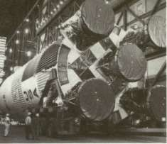
Apollo 11
16-24 July 1969
Left, the big S-IC stage of Apollo 11 arrived at Kennedy Space Center in February 1969. In March the S-II second stage (right) is mated to the first stage.
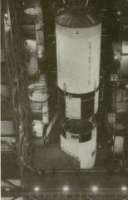
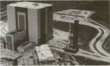
In May Apollo 11 rolls out of the Vehicle Assembly Building on its crawler (above) and arrives at Launch Complex 39 (right).
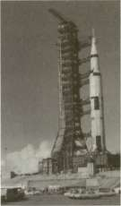
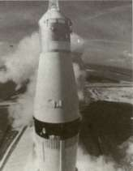
On 16 July, Apollo 11 is launched (left); 2.5 minutes later the first stage separates and the second-stage engines ignite (right). On 20 July the first men walked on the moon-(right, below).
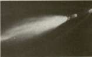
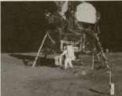
CONCEPTS AND ORIGINS
the third stage still in lunar-oriented trajectories, mission planners wanted to minimize the chances of the two elements colliding with each other. The spacecraft performed a three-second burn with its service propulsion system to impart a velocity increase of six meters per second. This procedure not only widened the distance between the two, but also put the spacecraft and the three-man crew into a free-return trajectory, which used the lunar gravitational field to aid in a return to Earth in case the lunar landing had to be aborted. NASA also wanted to avoid the chances of the S-IVB impacting into the lunar surface in the vicinity of the astronauts' landing zone, so an automated sequence triggered a dump of residual propellants in the S-IV to realign the third stage's trajectory in such a way that the moon's gravitational field increased the S-IVB's velocity in a different direction. This "slingshot" maneuver was effective enough to throw the stage into solar orbit, where it would eventually impact into the sun in a dramatic demise. 3
PYROTECHNIC PIONEERING
In its soaring flight out of the dominance of Earth's gravity, Apollo 11 marked one of the great milestones in rocket technology. The chemical and solid propulsion systems of the Saturn V and the Apollo spacecraft represented the distillation of concepts and plans and work by a host of people who had continuously worked toward the goal of manned lunar exploration. The rocket itself—the Saturn V—represented the culmination of generations of technological and theoretical work stretching all the way back to the 13th century.
There was one common denominator for the military, whaling, and life-saving rockets from antiquity through World War I: they were powder-burping, or "solid," rockets. A solid rocket, although simple, had several shortcomings. The rate of thrust after ignition of the rocket could not be controlled; there was no guidance after the launch; the powder technology at the turn of the century seemed to dictate a missile with an optimum weight of about 68 kilograms (most were in the 14-23-kilogram category); and the range rarely exceeded 2700 meters. Advances in artillery in the late 19th century had already displaced the rocket as an effective weapon. 4 For space exploration, solid-fueled rockets seemed to lack the thrust potential for extreme range or for reaching high altitudes. Visionaries who were thinking of using rockets for space exploration had to consider other sources for fuel, and there were still the problems of guidance, as well as the problem of human survival in the space environment.
At the same time that powder rockets began to fall from favor in the late 19th century, a realistic theory and development of space flight, with a strong interest in new types of propellants, was beginning to evolve.
STAGES TO SATURN
Three pivotal figures in the new era of rocket technology were Konstantin Tsiolkovsky (1857-1935), Robert H. Goddard (1882-1945), and Hermann Oberth (1894- ). They were imaginative men who drew their theories and experiments from the growing bank of science and technology that had developed around the turn of the century. For one thing, the successful liquefaction of gases meant that sufficient quantities of fuel and oxidizer could be carried aboard a rocket for space missions. Research into heat physics helped lay the foundations for better engine designs, and advances in metallurgy stimulated new standards for tanks, plumbing, and machining to withstand high pressures, heat, and the super-cold temperatures of liquefied gases. Progress in mathematics, navigational theory, and control mechanisms made successful guidance systems possible.
Although Tsiolkovsky did not construct any working rockets, his numerous essays and books helped point the way to practical and successful space travel. Tsiolkovsky spent most of his life as an obscure mathematics teacher in the Russian provinces, but he made some pioneering studies in liquid chemical rocket concepts and recommended liquid oxygen and liquid hydrogen as the optimum propellants. In the 1920s, Tsiolkovsky analyzed and mathematically formulated the technique for staged vehicles to reach escape velocities from Earth. In contrast to the theoretical work of Tsiolkovsky, Robert Goddard made basic contributions to rocketry in flight hardware. Following graduation from Worcester Polytechnic Institute, Goddard completed graduate work at Clark University in 1911 and became a member of the faculty there. In the 1920s, he continued earlier experiments with liquid-fueled vehicles and is credited with the first flight of a liquid-propellant rocket on 16 March 1926. With private support, Goddard was able to pursue development of larger rockets; he and a small crew of technicians established a test site in a remote area of the Southwest not far from Roswell, New Mexico. From 1930 to 1941, Goddard made substantial progress in the development of progressively larger rockets, which attained altitudes of 2300 meters, and refined his equipment for guidance and control, his techniques of welding, and his insulation, pumps, and other associated equipment. In many respects, Goddard laid the essential foundations of practical rocket technology, including his research paper entitled "A Method of Attaining Extreme Altitude" (published by the Smithsonian Institution in 1919)—a primer in theory, calculations, and methods—and his numerous patents that comprised a broad catalog of functional rocket hardware. In spite of the basic contributions of Tsiolkovsky in theory, and of Goddard in workable hardware, the work of both men went largely unheralded for years. Tsiolkovsky's work remained submerged by the political conditions in Russia and the low priority given to rocket research prior to World War II. Goddard preferred to work quietly, absorbed in the immediate problems 'of
CONCEPTS AND ORIGINS
hardware development and wary of the extreme sensationalism the public seemed to attach to suggestions of rocketry and space travel.
Although the work of Hermann Oberth was original in many respects, he was also significant as advocate and catalyst because he published widely and was active in popularizing the concepts of space travel and rocketry. Born in Transylvania of German parentage, Oberth later became a German citizen. He became interested in space through the fictional works of H.G. Wells and Jules Verne and left medical school to take up a teaching post where he could pursue his study and experimenting in rocketry. Oberth's work was independent of Tsiolkovsky's, and he heard of Goddard's brief paper of 1919 just as his own book, The Rocket into Planetary Space, was going to press in 1923. The Rocket into Planetary Space was read widely, translated into English, and was the precursor of many other books, articles, and lectures by the energetic author. Oberth analyzed the problems of rocket technology as well as the physiological problems of space travel, and his writings encouraged many other enthusiasts and researchers. In 1928, Oberth and others were consultants for a German film about space travel called The Girl in the Moon. The script included the now-famous reverse countdown before ignition and liftoff. As part of the publicity for the movie, Oberth and his staff planned to build a small rocket and launch it. The rocket was only static-fired and never launched, but the experience was a stimulating one for the work crew, including an 18-year-old student named Wernher von Braun.
During the ensuing years, Oberth continued to teach while writing and lecturing on space flight, and he served as president of the Verein fur Raumschiffahrt (VfR) (Society for Space Travel), which had been formed in 1927. The existence of organized groups like the VfR signaled the increasing fascination with modern rocketry in the 1930s, and there were frequent exchanges of information among the VfR and other groups like the British Interplanetary Society and the American Interplanetary Society. Even Goddard occasionally had correspondence in the American Interplanetary Society's Bulletin, but he remained aloof from other American researchers in general, cautious about his results, and concerned about patent infringements. Because of Goddard's reticence, in contrast to the more visible personalities in the VfR, and because of the publicity given the German V-2 of World War II, the work of British, American, and other groups has been overshadowed. If not as spectacular as the work on the V-2 rockets, their work nevertheless contributed to the growth of rocket technology in the prewar era and the successful use of a variety of Allied rocket weapons in the war. Although groups such as the American Interplanetary Society (which later became the American Rocket Society) succeeded in building and launching several small rockets, much of their significance lay in their role as the source of a growing number of technical papers on rocket technologies. But rocket
STAGES TO SATURN
development was complex and expensive. The costs and the difficulties of planning and organization meant that sooner or later the major work in rocket development would occur under the aegis of permanent government agencies and government-funded research bodies. 0
In America, significant team research began in 1936 at the Guggenheim Aeronautical Laboratory of the California Institute of Technology. In 1939 this group received the first Federal funding for rocket research. Research on rockets to assist aircraft takeoff was especially successful. The project was known as JATO, for Jet-Assisted Take-Off, because the word rocket still carried negative overtones in many bureaucratic circles. During World War II, U.S. armed forces made wide use of the bazooka (an antitank rocket) as well as a variety of barrage rockets launched from ground batteries or from ships, and high-velocity air-to-surface missiles. The JATO work also led to the development of a significant liquid-fueled rocket, a two-stage Army ballistic missile with a solid booster known as the
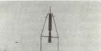
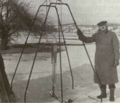
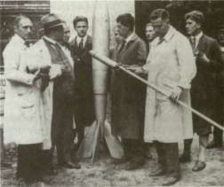
U.S. rocket pioneer Robert H. Goddard poses beside his rocket (left) before it achieved the first flight by a liquid-fueled rocket on 16 March 1926. In Germany (above) a rocket demonstration was held in August 1930 at the Chemish-Technische Reichsansalt (equivalent to the U.S. Bureau of Standards). Standing to the right of the rocket is Hermann Oberth; youthful Wernher von Braun is second from the right.
CONCEPTS AND ORIGINS
Wac Corporal. The first-stage booster, adapted from an air-to-ground rocket dubbed the Tiny Tim, developed 222 000 newtons (50 000 pounds) of thrust, and the second stage, filled with nitric acid-aniline liquid propellants, developed 6700 newtons (1500 pounds) of thrust, a combination that fired a payload up to an altitude of 69 kilometers. But the Corporal program did not reach full development until after 1945. 6 The most striking military rocket of the wartime era came from Germany.
THE LEGACY OF PEENEMUENDE
In the early 1930s, the VfR attracted the attention of the German Army because the Treaty of Versailles, which restricted some types of armaments, left the door open to rocket development, and the military began rocket research as a variation of long-range artillery. Captain Walter Dornberger, an Army artillery officer with advanced degrees in engineering, spearheaded military rocket development. One of his chief assistants was a 20-year-old enthusiast from the VfR, Wernher von Braun, who joined the organization in October 1932. By December 1932, the Army rocket group had static-fired a liquid-propellant rocket engine at the Army's proving ground near Kummersdorf, south of Berlin.
Wernher von Braun was born in 1912 at Wirsitz, Germany, in Posen Province, the second of three sons of Baron and Baroness Magnus von Braun. A present of a telescope in honor of his church confirmation started the youthful von Braun's interest in space, spurring him to write an article about an imaginary trip to the moon. Fascination with the prospects of space travel never left him, and in 1930 he joined the VfR, where he met Oberth and other rocket enthusiasts. At the same time, he attended the Charlottenburg Institute of Technology and did apprentice work at a machine factory in Berlin. Before completing his bachelor's degree in mechanical engineering in 1932, he had participated in the space-travel film project and had come into contact with German ordnance officers. This contact led to the Army's support of von Braun's doctoral research in rocket combustion, which he completed in a brief period of two years, and he received his degree from Friedrich-Wilhelms-Universitat of Berlin in 1934. 7
By the next year, it became evident that the available test and research facilities at Kummersdorf were not going to be adequate for the scale of the hardware under development. A new location, shared jointly by the German Army and Air Force, was developed instead. Located on the island of Usedom in the Baltic, the new Peenemuende facility (named for the nearby Peene river) was geographically remote enough to satisfy military security and boasted enough land area, about 52 square kilometers, to permit adequate separation of test stands, research facilities, production areas, and residential sections. Test shots could be fired into
STAGES TO SATURN
the Baltic Sea, avoiding impact in inhabited regions. Starting with about 80 researchers in 1936, the facility comprised nearly 5000 personnel by the time of the first launch of the V-2 in 1942. Later in the war, with production in full swing, the work force numbered about 18 000.
The V-2 (from Vergeltungswaffen-2, or "weapon of retaliation") had no counterpart in the Allied inventory. The V-2 was 14 meters long, with a diameter of 1.5 meters, and capable of speeds up to 5800 kilometers per hour to an altitude of 100 kilometers. By the end of the war, Germany had launched nearly 3000 of the remarkable V-2 weapons against targets in England and elsewhere in western Europe at ranges up to 320 kilometers. With the support of government, private, and university sources for research and development, the von Braun team at Peenemuende solved numerous hardware fabrication problems and technical difficulties (such as the production, storage, and handling of liquid oxygen in large quantity), while developing unique management skills in rocket technology. 8
Early in the V-2 development program, its creators began looking at the rocket in terms of its promise for space research as well as for military applications. The continuous undercurrent of fascination with space travel was real enough to land von Braun in the clutches of the Gestapo. Late in the war, the German SS made attempts to wrest control of Peenemuende from Dornberger. After von Braun himself turned down direct overtures from SS chieftain Heinrich Himmler, he was arrested at two o'clock one morning by a trio of Gestapo agents. Following two weeks of incarceration in prison at Stettin, von Braun was hauled into an SS court to hear the charges against him. Among other accusations, his prosecutors accused him of opposing the V-2 strikes on England and charged that he was more interested in rocketry for space research than in rocketry for warfare. Dornberger had to intercede directly with Adolf Hitler to get von Braun released.
By early 1945, it was apparent that the war was nearing its end. Von Braun called a secret meeting of his top staff and reviewed their options: stay on at Peenemuende in the face of the advancing Russian units or try to head south and surrender to the Americans. There was no dissent—go south. In railroad cars, trucks, and automobiles emblazoned with red and white placards reading Vorhaben zur besonderen Verwendung (Project for Special Disposition), the Peenemuende convoy bluffed its way through military and Gestapo checkpoints, arriving in the Harz mountain region in Bavaria with tons of documents and hundreds of Peenemuende personnel and their families. After regrouping, the von Braun team, unaware that the United States was already formulating a program to round up leading German scientific and technical personnel, began making plans for contacting the Americans. Best known as Operation Paperclip, the American search for the von Braun team had top priority. 9
CONCEPTS AND ORIGINS
On 2 May 1944, von Braun's younger brother Magnus climbed on a bicycle and set off down a country road in search of the Americans. Magnus was delegated for this delicate mission because he spoke better English. Contact was established, and several months of effort cleared the bureaucratic hurdles and prepared the way for over 100 selected German personnel to come to the United States. Finally, von Braun and six others arrived at Fort Strong in Boston on 29 September 1945. If the vanguard found the circumstances of their entry into the United States somewhat confusing and disorganized, they found American rocket development in much the same state of affairs. 10
EARLY POSTWAR AMERICAN ROCKETRY
The National Security Act of 1947 established a unified military organization under the Secretary of Defense, with separate and equal departments for the U.S. Navy, U.S. Army, and U.S. Air Force. In the nascent field of military rocketry, guidelines for responsibilities of research, development, and deployment were decidedly fuzzy. As a result, American missile development in the postwar era suffered from interservice rivalry and lack of strong overall coordination, a situation that persisted to the mid-1950s. The Air Force, successful in long-range bombardment operations during the war, made a strong case for leadership in missile development. On the other hand, the Navy worked up studies showing the capabilities of missile operations from ships and submarines, and the Army viewed missiles as logical adjuncts to heavy artillery. But the Air Force had initiated long-range missile development even before the end of the war, and this momentum gave them early preeminence in the field of missile development.
Because American missile technology did not yet have the capability for large rocket-propelled vehicles, the Air Force at first concentrated on winged missiles powered by air-breathing turbojet powerplants. The Air Force stable of cruise missiles possessed ranges from 1000 to 11 000 kilometers and were capable of carrying the heavy, awkward nuclear warheads produced in the early postwar era. Until the Atomic Energy Commission made lighter and less unwieldy warheads available, the Air Force pressed on with cruise missiles at the expense of development of rocket-powered intercontinental ballistic missiles (ICBMs) such as the Atlas. The Navaho project represented the peak of the cruise missile. Weighing in at 136 000 kilograms and capable of Mach 3 speeds, the Navaho's research and development costs came to $690 million. It never reached operational status before cancellation in 1957, when ICBM technology overtook it. The Navaho made three successful flights, and the fallout from certain aspects of Navaho research and development
STAGES TO SATURN
turned out to be very significant in other areas. The experience in high-speed aerodynamics was applied to other aeronautical research programs, and the missile's all-inertial guidance system found application in ICBMs' and submarine navigational systems. Moreover, the booster units for Navaho were noteworthy in ICBM designs. Even though the Navaho used a ramjet engine for sustained flight to the target, the heavy vehicle was boosted into the air by three liquid-propellant rocket engines of 600000 newtons (135000 pounds) of thrust each. Developed by Rocketdyne (a division of North American Aviation, Inc.), variants of these powerplants were developed for the Air Force's Thor and Atlas missiles, and for the Army's Redstone and Jupiter rockets. The rocket engines for the latter played a highly significant role in the evolution of the Saturn vehicles. 11
In the early postwar era, while the Air Force developed cruise missiles, the Army generated an increasing expertise in liquid propulsion rocketry through special projects at the White Sands Proving Ground in New Mexico. At White Sands, von Braun and the rocketry experts from Peenemuende not only made lasting contributions to American ballistic missile capabilities but made early ventures into space exploration. Besides test firing a series of captured V-2 rockets for the Army's operational experience, the German experts helped coordinate a series of upper atmospheric research probes. One such project, known as the Bumper Series, employed a V-2 as the first stage with a Wac Corporal upper stage, one of which reached an altitude of 393 kilometers. In 1950, the last two Bumper launches took place in Florida, at the Long Range Proving Ground, located at Cape Canaveral—a prelude to U.S. space launches of the future. Another major activity included the Hermes program and involved the General Electric Company's working with the von Braun team under Army Ordnance cognizance. During Hermes operations, the basic V-2 rocket underwent successive modifications, increasing its performance envelope and payload capabilities, while giving the American contractors progressive experience in rocket technology. A number of more-or-less indigenous American vehicles were also flown. Although none became operational, they afforded a highly useful exposure to rocket development for government and contractor agencies alike, and one of the concepts, Hermes C-l, contributed directly to the development of the first significant American ballistic missile, the Army's Redstone. 12
As the 1940s drew to a close, the Army decided to establish a new center of rocket activity. Although White Sands remained active as a test range, a facility devoted to basic research and prototype hardware development was needed. A site selection team finally settled on Redstone Arsenal in Huntsville, Alabama. Established in 1941 for the production of various chemical compounds and pyrotechnic devices (including small
CONCEPTS AND ORIGINS
solid-fuel rockets), Redstone had all the necessary attributes: shops, laboratories, assembly areas, and ample surrounding land to ensure both security and space for static-firing tests. Moreover, it was accessible to the Long Range Proving Ground, a rocket launch area of growing significance at Cape Canaveral. The transfer of von Braun's work from Fort Bliss was approved, and the Ordnance Guided Missile Center was in operation in Huntsville by the close of 1950.
During the Korean War, the new research center was assigned the development of a surface-to-surface ballistic missile with a range of 160 kilometers. A propulsion system adapted from the Navaho program enhanced rapid development, and the first launch of the new Redstone occurred at Cape Canaveral on 20 August 1953. Before declaring it operational in 1958, the von Braun team fired 36 more test vehicles. The prolonged Redstone development program epitomized the thorough, step-by-step engineering conservatism developed during the early years of rocket development at Peenemuende. This conservatism was a continuing trait of the von Braun team throughout the evolution of the Saturn program. Another point of significance concerned the involvement of the Chrysler Corporation as the prime contractor who built the last 20 R&D models and continued production of the operational models. The Chrysler connection provided valuable experience in government-contractor relationships that was the keynote of the development of the Saturn series of launch vehicles, and Chrysler, like Rocketdyne, also became an important contractor in the Saturn program.
In the meantime, the accumulated design experience of the Redstone program contributed to a joint Army-Navy development program involving the Jupiter vehicle, a direct derivative of the Redstone. This shortlived but interesting cooperation had its origins in the immediate postwar era. Because the Navy had its own interests in rocket technology and the Army possessed a reasonable supply of V-2 rockets, the two services collaborated in experimental V-2 launches from the flight deck of the aircraft carrier Midway in 1947. At an altitude of 1500 meters above the carrier's deck, a missile disintegrated in a ball of flame and debris. The specter of catastrophe, if such a large liquid-fueled rocket accidentally exploded on a ship at sea and spewed its hugh volume of volatile propellants everywhere, led the Navy to proceed cautiously with liquid-propellant rockets. Nevertheless, the Department of Defense encouraged the formation of the joint Army-Navy venture in ballistic missiles in 1955, and the Army's designated organization in the partnership was the Army Ballistic Missile Agency (ABMA), created in 1956 and staffed primarily out of von Braun's group at the Redstone Arsenal. Major General John B. Medaris became ABMA's commanding officer. Wise in the ways of military bureaucracy, the enterprising Medaris also won unusually wide latitude in determining the direction of ABMA's research and allocation
STAGES TO SATURN
of funds. Medaris and the equally venturesome von Braun made ABM A a remarkably resourceful and aggressive organization, especially when ABMA found itself in a solo role in Jupiter's eventual development.
This situation came late in 1956, when naval experts decided to concentrate on solid-fuel rockets. This direction eliminated logistic and operational difficulties inherent in the deployment of liquid-propellant rockets in seaborne operations, particularly with missiles launched underwater from submarines. The Navy gave official authorization to its own strategic missile—the Polaris—early in 1957. Based on a solid-fuel motor, the Polaris nevertheless borrowed from the Jupiter program in the form of its guidance system, evolved from the prior collaboration of ABMA and the Navy.
ABMA continued Jupiter development into a successful intermediate range ballistic missile (IRBM), even though the Army eventually had to surrender its operational deployment to the Air Force when a Department of Defense directive late in 1956 restricted the Army to missiles with a range of 320 kilometers or less. Even so, ABMA maintained a role in Jupiter R&D, including high-altitude launches that added to ABMA's understanding of rocket vehicle operations in the near-Earth space environment. It was knowledge that paid handsome dividends later.
Rockets of the 1950s: left to right: a captured German V-2 is readied for firing at White Sands, New Mexico; an Air Force Navaho is launched from the Air Force Missile Test Center, Florida; an Army Jupiter C is launched from the missile center with an Explorer satellite; Vanguard I is launched on a Vanguard booster from the Atlantic Missile Range.
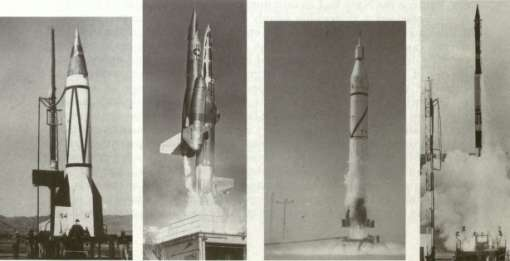
CONCEPTS AND ORIGINS SATELLITES, THE SPACE RACE, AND THE BOOSTER GAP
During the early 1950s, the Atomic Energy Commission successfully perfected smaller hydrogen-bomb warheads. In the Air Force, these warheads caused cruise missile development to be replaced by new emphasis on the Thor IRBM and the longer range missiles such as the Atlas intercontinental ballistic missile (ICBM). Successful launches of the single-stage Thor and the one-and-a-half-stage Atlas occurred in 1957 and 1958, and the Air Force also began work on an advanced ICBM, the Titan, a two-stage vehicle launched for the first time in 1959. The increasing payload capability of these various missiles opened the possibility of replacing their warheads with satellites and using them as boosters to launch heavy scientific payloads into space. The United States had already applied the growing expertise of rocket technology to the development of a family of sounding rockets to carry instrumentation for upper atmospheric research, such as the Navy's Aerobee and the Viking, which would reach altitudes between 160 and 320 kilometers. During the period of the International Geophysical Year 1957-1958, many nations around the world conducted a coordinated program of sounding rocket launches, including 210 sent up by the United States and 125 launched by the Soviet Union. However, the United States had an even more ambitious goal than launching sounding rockets during the International Geophysical Year. America planned to orbit its first small satellite.
The satellite project began in 1955. In spite of the international spirit of cooperation inherent in International Geophysical Year programs, a strong sentiment in the United States was that America should not waste time and should attempt to orbit a satellite ahead of the Russians. For the booster, a blue-ribbon selection panel from military and industry analyzed a list of candidates that included the Atlas, the Redstone, and the Viking. ABMA argued that Atlas was still untested in 1955. The Viking vehicle, its opponents noted, still required a program to uprate its first-stage engines and develop new second and third stages before it could become operational. On the other hand, the Army's Jupiter C vehicle—a direct derivative of the proven Redstone—appeared to have all the capabilities necessary to launch a satellite successfully. For complex reasons, the committee selected the Viking; they argued that the Viking had been intended from the start as a vehicle for space research and that its development would not impinge on America's ballistic missile program, which was considered to be lagging behind the Russians' program. The choice of Viking, in the context of Cold War concerns over international prestige and technological leadership, was a controversial decision. The new program, to be known as Project Vanguard, was authorized in September 1955 under the Department of the Navy. 13
STAGES TO SATURN
Although the first stage was successfully launched on 23 October 1957, the first Vanguard with three "live" stages blew apart on the pad, and its successor veered off course and disintegrated before it had ascended six kilometers. As if these last two fiascos were not enough, Vanguard was already overtaken by events. The Russians had orbited Sputnik I on 4 October 1957. Within four weeks the Soviet Union demonstrated that Sputnik was no fluke by launching a second orbital payload; Sputnik II, carrying the dog "Laika," went into orbit on 3 November. 14 The potent Russian boosters threw a long shadow over Vanguard. Plans to use an existing military booster gained support once again.
The honor of launching America's first satellite fell to the close-knit group of pioneers who had dreamed of space exploration for so many years, the von Braun team. When the Army's Redstone-Jupiter candidate for the International Geophysical Year satellite was rejected, ABMA assumed a low profile but kept up work. As one ABMA insider explained, von Braun found a "diplomatic solution" to sustain development of the Jupiter C by testing nose cones for the reentry of warheads. Following launch, solid-propellant motors in the second and third stages accelerated an inert fourth stage attached to an experimental nose cone. The nose cones tested ablative protection as they reentered Earth's atmosphere. After successful tests during the summer of 1957, von Braun declared that a live fourth stage and a different trajectory would have given the United States its orbiter. In any case, ABMA was not unprepared to put an American payload into Earth orbit. Slightly more than four weeks after the launch of Sputnik, the Secretary of Defense finally acceded to persuasive pleas from ABMA to put up an artificial satellite, using its own vehicle. Authorization from the secretary for two satellite launches came on 8 November 1957, and the initial launch was set for 30 January 1958. ABMA missed the target date by only one day, when a Jupiter C orbited Explorer I on 31 January 1958. 15 The unqualified success of Explorer I and its successors derived in large part from the existing operational capability of the Jupiter C launch vehicle, from the flexibility of ABMA's in-house capability, and from the technical expertise of the Jet Propulsion Laboratory (JPL), which functioned administratively as a unit of the California Institute of Technology and got a large share of its funds through Army contracts. JPL developed the solid-fuel propulsion units for the upper stages of the Jupiter C as well as the payloads for the Explorer satellite. Within the next few months, the Jupiter C vehicles, designated as Juno boosters for space launches, also carried payloads into orbit around the moon and the sun. 16
During the public consternation and political turmoil in the wake of the Soviet space spectaculars, the American government began a thorough reappraisal of its space program. One result was the establishment of the National Aeronautics and Space Administration (NASA) in place
CONCEPTS AND ORIGINS
of the old National Advisory Committee for Aeronautics (NACA). Created when President Eisenhower signed the National Aeronautics and Space Act into law on 29 July 1958, NASA was organized to ensure strong civil involvement in space research so that space exploration would be undertaken for peaceful purposes as well as for defense. Although late in success, Project Vanguard was not without its benefits. Vanguard I finally got into orbit on 17 March 1958, and two more Vanguards attained orbit in 1959. The program yielded important scientific results, as well as valuable operational experience. Upper stages of the Vanguard vehicle were used in conjunction with later booster vehicles such as the Thor and the Atlas, and the technique of gimbaled (movable) engines for directional control was adapted to other rockets. 17
The period 1958—1959 seemed to trigger feverish activity in space exploration. In the months and years that followed, dozens of satellites and space vehicles were launched, including space probes that landed on Venus and the moon. Although other nations inaugurated space programs and launched their own boosters and scientific payloads, most public attention fastened on the manned "space race" between the U.S.S.R. and the United States. Within the first week of NASA's existence in October 1958, Project Mercury was authorized to put an American astronaut into orbit, and the space agency began negotiations to obtain the necessary boosters and select candidates for astronaut training.
At that time, NASA did not have the resources to develop its own boosters for space exploration. Mission planners reached into the inventory of American ballistic missiles and finalized agreements with the Army and ABMA for use of the Redstone, as well as the Atlas ICBM to be acquired from the Air Force. To check out requirements and systems for manned orbital operations, NASA planned to employ the Redstone for suborbital launches, and the more powerful Atlas would be used for the orbital missions. Selection of the first seven Mercury astronauts was announced in the spring of 1959, and work proceeded on the development and testing of the Mercury space capsule, including unmanned test launches in 1960. Early in 1961 a Mercury-Redstone launch from Cape Canaveral carried the chimpanzee "Ham" over 640 kilometers down-range in an arching trajectory that reached a peak of 253 kilometers above Earth. The chimp's successful flight and recovery confirmed the soundness of the Mercury-Redstone systems and set the stage for a suborbital flight by an American astronaut. But the Americans were again upstaged by the Russians.
On 12 April 1961, Major Yuri Gagarin was launched aboard Vostok I and completed one full orbit to become the first human being to travel in orbit about the Earth. Just as the Russians appeared to have overtaken the Americans in the area of unmanned space projects, they now seemed to have forged ahead in manned exploration as well. Although Alan B. Shepard made a successful suborbital flight atop ABMA's Redstone
STAGES TO SATURN
booster on 5 May, even this milestone was overshadowed when Soviet Cosmonaut Gherman Titov roared into space aboard Vostok II on 6 August and stayed aloft for !7 ! /2 orbits. It was not until the following year that Astronaut John H. Glenn became the first American to orbit the Earth. Boosted by a modified Atlas ICBM, Friendship 7 lifted off from Cape Canaveral on 20 February 1962 and orbited the Earth three times before Glenn rode the capsule to splashdown and recovery in the Atlantic.
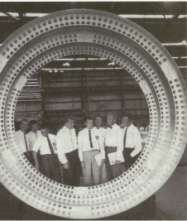
At the Marshall Space Flight Center (left), Dr. Wernher von Braun is flanked by the seven original astronauts as he explains details of rocket fabrication. At right, a Mercury-Redstone rocket launches Astronaut AlanB. Shepard on this nation's first manned space flight. Below, the manned flight vehicles are shown in scale.
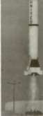
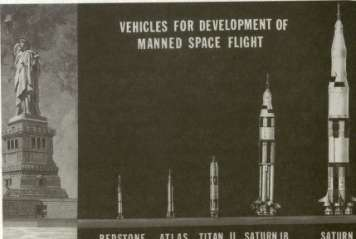
CONCEPTS AND ORIGINS
These and other manned flights proved that humans could safely travel and perform various tasks in the hostile environment of space. Over the next few years, both Russian and American manned programs improved and refined booster and spacecraft systems, including multicrew missions. The Russians again led the way in such missions with the flight of Voshkod I in 1964 (a three-man crew), and a Russian cosmonaut Aleksey Leonov performed the first "space walk" during the Voshkod II mission in 1965. The same year, NASA began its own series of two-man launches with the Gemini program. With a modified Titan II ICBM as the booster, the first Gemini mission blasted off from Cape Kennedy on 23 March 1965, and the Gemini program, which continued into the winter of 1966, included the first American space walks, as well as highly important rendezvous and docking techniques. The maneuvers required to bring two separate orbiting spacecraft to a point of rendezvous, followed by the docking maneuver, helped pave the way for more ambitious manned space missions. Plans for multimanned space stations and lunar exploration vehicles depended on these rendezvous and docking techniques, as well as the ability of astronauts to perform certain tasks outside the protected environment of the spacecraft itself. The successive flights of the Mercury-Redstone, Mercury-Atlas, and Gemini-Titan missions were progressive elements in a grand design to launch a circumlunar mission to the moon and return to the Earth. 18
Against the background of Mercury and Gemini developments, work. was already progressing on the Apollo-Saturn program. The spacecraft for the Apollo adventure evolved out of the Mercury and Gemini capsule hardware, and other research and development was directed toward new technology required for a lunar lander and associated systems. A parallel effort involved the development of an entirely different family of boosters. Heretofore, NASA had relied on existing boosters requisitioned from the armed services—the Redstone missile, along with Thor, Atlas, and Titan. For manned lunar missions, a rocket of unusual thrust and lifting capacity was called for—literally, a giant of a booster. During 1960, the von Braun team was transferred from ABM A to NASA, bringing not only its conceptual understanding of manned space flight (based on preliminary studies in 1957 and 1959) but also its acknowledged skills in the development of rockets. For manned missions, the von Braun team developed a totally different big booster—the Saturn.
The Saturn Building Blocks
The original impetus for Saturn envisioned a brawny booster to launch Department of Defense payloads. The von Braun team at the Army Ballistic Missile Agency (ABMA) received money from the Department of Defense's Advanced Research Projects Agency to demonstrate the concept. Furthermore, von Braun's group eventually became the nucleus of NASA's Marshall Space Flight Center (MSFC). These convolutions and the vague outlines of evolving Saturn vehicle technology constitute the themes of chapter 2.
The Saturn program eventually included three basic vehicles: Saturn I, Saturn IB, and Saturn V. Chapter 3 describes the events that led to these three separate rockets, whose configuration evolved out of the choice to go the moon by means of the lunar orbit rendezvous technique. MSFC began development of facilities to develop and test the mammoth boosters. Chapter 3 concludes with a discussion of the design and manufacture of lower-stage boosters for the Saturn I and Saturn IB.
Aerospace Alphabet: ABMA, ARPA, MSFC
In November 1956, when the Air Force finally triumphed over the Army and Navy for leadership in long-range military rockets, planners at ABMA momentarily regrouped to plot a new direction, a strategy for large booster development geared instead to the exploration of space. Having lost round one to the Air Force, ABMA's stratagem was to leapfrog onward and upward to a quantum jump. 1
In April 1957, ABMA began design studies on an advanced booster concept. With a total thrust of approximately 6800000 newtons (1.5 million pounds) in the first stage alone, the proposed vehicle was referred to as the Super-Jupiter. The impetus for the development of a Super-Jupiter class apparently evolved from Department of Defense plans for "certain advanced missions using space devices in communication," as well as space probes and weather satellites. However, such payloads, especially satellite programs, required a booster much larger than existing launch vehicles. The Department of Defense guidelines called for a launch vehicle capable of putting 9000 to 18 000 kilograms into Earth orbit or accelerating space probes of 2700 to 5400 kilograms to escape velocity. At that time, ABMA estimated that satellite carriers on order, such as Thor, Juno II, and Atlas, could be expected to put up to 1400 kilograms into orbit. This capability might be increased to 4500 kilograms with high-energy propellants in upper stages. However, these boosters, with conventional propellants, would not be available for at least two years. The high-energy versions would not be operational until 1961 or 1962. Given the urgency of Department of Defense requirements for large payloads, a new class of booster and associated equipment had to be developed in a very short time, while keeping costs within low DOD limitations. 2
STAGES TO SATURN
ARPA's BIG BOOSTER
Early design and cost studies at ABMA suggested the possibility of using a single engine of 4 450 000 newtons (1 million pounds) of thrust, for which Rocketdyne Division of North American had made a feasibility study for the Air Force. Although this was an "Air Force engine," no other large propulsion system existed. The F-l engine seemed unlikely to reach the point of full-scale testing for at least two years—too late to meet the accelerated booster development program of the Department of Defense. In any case, a booster with 6700000 newtons (1.5 million pounds) of thrust was needed, so the ABMA planning staff gave up on the simplicity of one large engine and turned to a combination of four smaller ones.
Rocketdyne also had a project under way for a 1 600 000- to 1 690 000-newton (360 000- to 380 000-pound) thrust engine known as the E-1. Proposals for the four-engine booster involved the use of what one ABMA official called "off-the-shelf tankage" (presumably a single large-diameter booster propellant tank from the existing stable of military missiles) with the four E-l engines in a cluster underneath it. This version of Super-Jupiter was closely analyzed by ABMA and technical experts from North American, and a number of upper-stage configurations were suggested. With specific choices in terms of engines and tankage still open, ABMA was by now certain that the clustering of engines was the most feasible route to attain quickly the Department of Defense goal of a 6 700 000-newton (1.5-million-pound) first-stage booster. In December 1957, ABMA delivered its proposal to the Department of Defense: "A National Integrated Missile and Space Vehicle Development Program." The document affirmed the clustered engine mode as a shortcut method to achieve large payload capability in the least amount of time. 3
Nevertheless, Super-Jupiter still remained a feasibility study, existing only on paper and within the fertile imaginations of von Braun and his group at Huntsville. The Department of Defense had its stated requirements for payloads of many tons, and ABMA had its proposals for possible booster configurations, but there was still no priority or money to get Super-Jupiter past the level of paperwork. The immediate catalyst came in the form of a new Department of Defense organization whose high-priority recommendations cut through layers of red tape and allocated dollars for converting studies into hardware—the Advanced Research Projects Agency (ARPA).
During the turbulent months of late 1957 and early 1958, the Eisenhower administration wrestled with the challenges posed by Sputnik I, the abortive launches of Vanguard, and the last ditch mission of Explorer I. A long-term, reasoned, and integrated space program called
AEROSPACE ALPHABET: ABMA, ARPA, MSFC
for some informed and firm decisions. In February, President Eisenhower chartered a special committee under the guidance of Dr. J. R. Killian to study the issues and make recommendations for a national space program. As the Killian committee convened, the Department of Defense moved on its own to rationalize space research involving the armed services. On 7 February 1958, ARPA was formally established by Secretary of Defense Neil H. McElroy, and after part-time guidance through most of two months, Roy W. Johnson became the new agency's director on 1 April. Johnson, a graduate of the University of Michigan, had been executive vice-president at General Electric. There was no doubt that Johnson had extensive authority: he reported directly to the Secretary of Defense. The influence of ARPA became evident when William M. Holaday, Director of Guided Missiles in the Department of Defense, received orders to transfer some of his activities to the new agency. Johnson insisted on running ARPA as a mechanism for establishing goals and coordinating research efforts, as opposed to active R&D work and management of contracts. ARPA made top decisions and allocated the money, giving full rein to whatever organization was nominated to run a project. ARPA remained a small, tightly knit organization, numbering about 80 people "including the girls (in the office)," as Johnson put it, and drew the core of its technical staff from specialists in the Army, Navy, and Air Force. 4
Through the spring of 1958, ARPA began to get its own organization in line while ABMA continued its preliminary studies for the Super-Jupiter with E-l engines. Then in July, ARPA began to show more specific interest in the huge 6 700 000-newton (1.5-million-pound) booster but argued for the use of available engine hardware, as opposed to the still untried E-l propulsion systems. ARPA's line of reasoning was tied to its objective of developing the big booster in the shortest amount of time and doing the job within a framework of limited funds. The von Braun group in Huntsville possessed considerable experience with the engines for its own Jupiter series of rockets, and so a new cluster, with eight Jupiter engines instead of four E-l types, began to evolve. Even though no formal agreements existed as yet between ARPA and ABMA, the close working relationship between the two organizations was evident in the name chosen for the new eight-engine booster. Known as Juno V, the designation followed ABMA's prior conceptual studies for advanced Juno III and Juno IV multistage rockets. By using off-the-shelf hardware, including the engines, it was estimated that Juno V, compared with the Super-Jupiter with E-l engines, would save about $60 million and as much as two years research and development time. 5
With such preliminaries out of the way, ARPA issued more specific instructions to ABMA, granting authority and authorizing funds for the Juno V. ARPA Order Number 14-59, dated 15 August 1958, clarified the discussions of the previous weeks:
STAGES TO SATURN
Initiate a development program to provide a large space vehicle booster of approximately 1 500 000-lb. [6 700 000-newton] thrust based on a cluster of available rocket engines. The immediate goal of this program is to demonstrate a full-scale captive dynamic firing by the end of CY 1959.
This was a historic document, for it committed money and engaged the von Braun team at Huntsville in an effort they had long dreamed about. Juno V became the progenitor of a new family of launch vehicles that would be used in the nation's future space program. As von Braun himself put it, "Juno V was, in fact, an infant Saturn." 6
Indeed, during this early period the Saturn designation was frequently used by von Braun and others inside ABMA. A new name seemed appropriate, because Saturn was seen as a distinct break from the Juno series—a new breed of launch vehicle that would see an active lifetime of a decade or more. "The SATURN," observed one ABMA report, "is considered to be the first real space vehicle as the Douglas DC-3 was the first real airliner and durable work-horse in aeronautics." 7 In the autumn of 1958, however, the full development of the Saturn was only beginning. As two engineers from Huntsville commented, "The state of the art at this time classified the Saturn booster as almost impossibly complex." 8
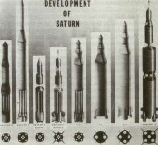
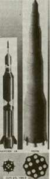
AEROSPACE ALPHABET: ABMA, ARPA, MSFC
The decision not to use the E-l engine and to go to off-the-shelf hardware did not catch ABMA personnel flatfooted. Technicians and engineeers at Huntsville were already working on propulsion systems related to the Jupiter to increase thrust, simplify operation, and improve overall mechanical and other systems. This work gave the engine development an important momentum early in the game and encouraged ABMA's optimism when ARPA requested a program for static firing a multiple engine cluster within 18 months, while operating on a shoestring budget. Still, "it was not easy," Willy Mrazek, one of the top ABMA planners, mused years later. One of the problems involved the engine manufacturer. When ABMA contacted Rocketdyne and laid out the program, company officials were intrigued by the big cluster idea but protested that the dollar allocation simply could not stretch far enough to finance the rebuilding and testing of engines and spares for the size of the program suggested by ABMA. By using all their persuasive power, and even a little "arm twisting," as Mrazek recalled, the von Braun group convinced Rocketdyne to take the plunge, including the authorization for the company to glean hardware from their stockrooms that was left over from prior manufacturing and development programs sponsored by the government. By 11 September 1958, Rocketdyne had signed a contract with ABMA to uprate the original Thor-Jupiter engine, known as the S-3D propulsion system, creating a unit suitably modified to operate in the cluster configuration. The new engine was called the H-l, and ABMA signed away half of its available funds to get it. 9
With the money they had left, ABMA went to work in Huntsville to decide how to allocate their scarce dollars for oversized test stands and to define the configuration of the tankage. An early decision was made to modify an existing test stand "out in our backyard," as Mrazek phrased it, keeping in mind that, although it had been designed to take Army missiles like the Jupiter 2.67-meter-diameter tank and a thrust of 734 000 newtons (165 000 pounds) the test stand had to be reworked to take a "monster" that was 24 meters high, 6 meters in diameter, and built to put out a thrust of almost 6 700 000 newtons (1.5 million pounds). The lean budget also had to cover a miscellany of items such as tooling to fabricate the oversized tanks and development of a thrust structure to take the maximum force of eight engines firing together at full throttle. There was also the need for oversized assembly jigs for manufacturing and checkout of the big new booster and for the costs of getting all the materials and the manpower to put the thing together. Like Rocketdyne, ABMA found that short funds made a virtue of scrounging in the dark corners of warehouses and stockrooms and put a premium on imaginative shortcuts.
Because ARPA Order Number 14-59 called only for a static demonstration in the test stand, not a flight-configured launch vehicle, the booster that began to take shape on the Redstone Arsenal drawing
STAGES TO SATURN
boards and in the shops was definitely a bargain-basement and patchwork affair. The volume of the tankage posed a special problem. The fabrication and welding of a single 6-meter-diameter tank, with separate compartments for fuel and oxidizer, meant new techniques and working jigs. Consumption of time and money threatened to become exorbitant. A different approach to the problem evolved, and existing tanks were used instead. From its own earlier production runs, ABM A located partial rejects and incomplete 1.78-meter tanks from the Redstone and 2.67-meter tanks from the Jupiter missiles. Since the engines were going to be clustered, why not the tanks? "The dire need made us more inventive," Mrazek pointed out, "and we bundled the containers to be loaded with propellants." So the vaunted big booster emerged from the drawing boards as a weird compromise of eight separate 1.78-meter Redstone tanks surrounding a 2.67-meter Jupiter tank. It did not look exactly like a smooth, streamlined futuristic vehicle for the exploration of space, nor was it intended to be. Designed solely to see if a blockbuster of a rocket could run its eight engines in concert, ABM A was satisfied with its awkward-looking compromise. 10
While the work in Huntsville progressed, representatives from ARPA kept a close watch on the proceedings and made frequent visits to Redstone Arsenal. They increasingly liked what they saw. So much so, in fact, that they decided to propose a series of test flights. On 23 September 1958, ARPA and the Army Ordnance Missile Command (AOMC) drew up an additional memorandum of agreement enlarging the scope of the
A 1959 version of Saturn I is shown at the right. Redstone and Jupiter tankage (left) were combined in Saturn I's first stage.
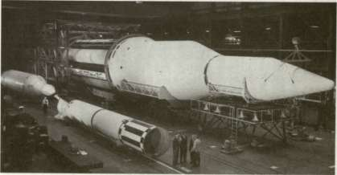
AEROSPACE ALPHABET: ABMA, ARPA, MSFC
booster program. Signed by Major General J. B. Medaris for AOMC and Roy Johnson for ARPA, the joint memorandum stated: "In addition to the captive dynamic firing . . . , it is hereby agreed that this program should now be extended to provide for a propulsion flight test of this booster by approximately September 1960." Further, the von Braun group was called on to produce three additional boosters, the last two of which would be "capable of placing limited payloads in orbit." Along with the new scheme came much needed funds. ABMA could now count on $13.4 million in FY 1959 and $20.3 million in FY 1960 for the captive firing test and first launch, in addition to $8.6 million in the same period for development of appropriate facilities. For the three additional flights by 1961, ABMA would receive as much as $25 million to $30 million.
The decision to make the Juno V into a flight vehicle added new dimensions to planning problems. First, a launch site had to be selected. Moreover, the size of the booster posed unique transportation problems. As long as the launch location remained undetermined (possibly a remote site in the Pacific), ABMA planned to dismantle the entire booster and airlift the components separately, a concept that would be possible because of the use of individual propellant tanks, engines, and associated structural modules. Still, the Juno V engineering team was never quite sure the dismantling and rebuilding scheme would work effectively. "Thank goodness," Mrazek admitted, "we never had to disassemble the first flight vehicle." In the end, it was agreed to launch from the Atlantic Missile Range at Cape Canaveral, and ABMA worked out a more feasible method of transporting its launch vehicles intact by relying on water routes. 11
While ARPA proceeded to hammer out a program for booster development, a number of government committees were at work, attempting to clarify overall priorities for a national space program. On the heels of Sputnik, Senator Lyndon B. Johnson began probing the status of America's national security and the space program through hearings of the Senate Preparedness Investigation Subcommittee of the Senate Armed Forces Committee. As chairman of the subcommittee, Johnson kicked off the hearings on 25 November 1957. The National Advisory Committee for Aeronautics (NACA) was gearing up its own studies about the same time, and the White House also had a high-powered study in progress—the Killian committee, directed by President Eisenhower's recently appointed Special Assistant for Science and Technology, James R. Killian. The subcommittees of Killian's group reporting early in 1958 evidently had the most influence in shaping the Administration's approach. Even though the committee reports were shot through with overtones of
STAGES TO SATURN
national security and the notion of a space race with the Russians, Administration officials generally agreed that proposals for a new space agency should result in an organization that was essentially nonmilitarv. Because of its civil heritage, existing programs, and general programs, NACA was singled out as the most likely candidate to form the nucleus, though a new name was recommended. Strictly military programs would continue under the Department of Defense. 12
During April 1958, Eisenhower delivered the formal executive message about the national space program to Congress and submitted the Administration's bill to create what was then called the "National Aeronautical and Space Agency." The hearings and committee work that followed inevitably entailed revisions and rewording, but the idea of a civilian space agency persisted, and the old NACA role of research alone began to change to a new context of large-scale development, management, and operations. Congress passed the National Aeronautics and Space Act of 1958 on 16 July, and Eisenhower signed the bill into law on the 29th. During August, the Senate speedily confirmed Eisenhower's nominations of T. Keith Glennan as Administrator and Hugh Dryden as Deputy Administrator. At the time of his appointment, Glennan was president of Case Institute of Technology and had been a member of the Atomic Energy Commission. Dryden, a career civil servant, had been Director of NACA but was passed over as the new chief of NASA. The subsequent days and months included some jockeying and horse trading to establish the principal directives of the new organization.
When the Space Act was signed, no mention was made as to the management of a program for manned space flight, and the Army, Navy, and Air Force continued to maneuver for position until late August,
President Dwight D. Eisenhower presents commissions as the first Administrator and Deputy Administrator of the new National Aeronautics and Space Administration to Dr. T. Keith Glennan (right) and Dr. Hugh Dryden.
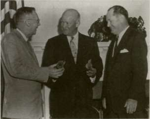
AEROSPACE ALPHABET: ABMA, ARPA, MSEC
when Eisenhower specifically designated NASA as the agency to conduct manned space flight programs. In September, NASA's new Administrator, T. Keith Glennan, and Roy Johnson of ARPA agreed to cooperate in the development of a manned satellite. NASA's effective date of birth was 1 October 1958. The employees who left their NACA offices Tuesday evening, 30 September, returned to the same offices Wednesday morning as personnel of the National Aeronautics and Space Administration. With the passage of time, ARPA's entire big-booster program would find a niche in the new organization. 13 These were bold plans, and neither the old NACA nor the new NASA possessed an existing capability for the job. Glennan wanted ABMA's von Braun team for its abilities in launch vehicles and the Jet Propulsion Laboratory (a major Army contractor) for its general expertise in astronautical engineering and payload development. NASA had to accept a compromise: the space agency got the Jet Propulsion Laboratory (officially transferred on 3 December 1958), but ABMA's missile team stayed in the Army. ABMA and its big booster were, however, already enmeshed in NASA planning, and it was only a matter of time before assimilation was complete. 14
NACA, for its part, had already been speculating about its role in the space program, and several committees had been at work in late 1957 and early 1958 studying the various factors a space program entailed: vehicles; reentry; range, launch, and tracking; instrumentation; space surveillance; human factors; and training. Late in March 1958, a NACA group studying "Suggestions for a Space Program" included notations for a launch program in January 1959 to put satellites of 135 000 to 225 000 kilograms in orbit (reflecting the earlier Department of Defense plans), and development of a rocket of 4450000 newtons (1 million pounds) thrust, as well as "development of hydrogen fluorine and other special rockets for second and third stages."
The ABMA large booster program first entered NASA planning through the NACA Special Committee on Space Technology chaired by Guyford Stever. The Working Group on Vehicular Program included von Braun as chairman. Organized 12 January 1958, the Stever committee made its final report on 28 October, when NASA was already a month old. 10 Von Braun's working group on vehicles had already made its preliminary report on 18 July. The language did not differ much from that of the final draft. The report began with harsh criticism of duplication of effort and lack of coordination among various organizations working on the nation's space programs. "The record shows emphatically," the report said, that the Soviet Union was definitely ahead of the United States in space travel and space warfare.
How was the United States to catch up? There were several existing vehicle systems to help the United States proceed on a logical and consistent space research program. At least two large booster types under
STAGES TO SATURN
development or in the planning stages would place the Americans in a better position. The von Braun paper described five generations of boosters. First was the Vanguard class of launch vehicles, and second were the Juno and Thor IRBM vehicles. Third were the Titan and Atlas boosters from the ICBM inventory. Fourth came the clustered boosters, which would yield up to 6700000 newtons (1.5 million pounds) of thrust. Fifth, and last, was the possibility of using an advanced 6 700 000-newton (1.5-million-pound) thrust single-barrel engine in a cluster of two to four engines to give up to 25 000 000 newtons (6 million pounds) of thrust. How were they to be employed? The working group conjectured that the United States might put into operation a four-man space station in 1961 with the use of the ICBM boosters. By using clustered boosters, with first flights beginning in 1961, the committee estimated a manned lunar landing in 1965-1966. The clustered vehicles would also support the deployment of a 50-man space station in 1967, and the fifth generation of boosters would support sizable moon exploration expeditions in 1972, set up a permanent moon base in 1973-1974, and launch manned interplanetary trips in 1977. "The milestones listed . . . are considered feasible and obtainable as indicated by the supporting information presented in the body of the report," the working group concluded. 16
The recommendations to achieve these goals included NASA's rapid development as the major director and coordinator of the vehicle program, working in partnership with ARPA. "The immediate initiation of a development program for a large booster, in the 1.5 million pound [6 700 000 newton] thrust class, is considered a key to the success of the proposed program," the report stated, and urged the development of such an engine. The program would cost about $17.21 billion to pay for 1823 launches, including the as-yet undeveloped ICBM and clustered boosters. There would be considerable savings, the group noted, if a comprehensive booster recovery scheme were incorporated. 17
With von Braun representing ABMA on the Stever committee, his presence marked an early meshing of ABMA and NACA in the nation's space programs. Indeed, the Stever committee was intended to fill in the gaps in NACA space technology. NACA officials James Doolittle, Dryden, and Stever selected committee members with an eye to their future roles in the space programs as well as educating NACA personnel in space R&D. Large rocket boosters certainly constituted a big gap in NACA competence, so that the selection of von Braun was a key move, along with Sam Hoffman of Rocketdyne, Abe Hyatt of the Office of Naval Research, and Colonel Norman Appold, representing Air Force General Bernard Schriever, who spearheaded the development of big rockets in the Air Force. 18
AEROSPACE ALPHABET: ABMA, ARPA, MSEC
SATURN PAYLOADS
The interwoven activities of a civilian space agency using a booster of military origins left the issue of payloads somewhat uncertain. ABMA had been operating its big booster program under the aegis of ARPA and considered the Juno V primarily a military vehicle with an imprecise potential for use in a civilian role. On 13 October 1958, ABMA listed its customers in order of importance. First was ARPA, as the Department of Defense representative of all military services, with the Juno V as a general carrier vehicle for research and development of "offensive and defensive space weapons." Certain specific tasks were forecast for each of the military services, including navigation satellites for the Navy; reconnaissance, communications, and meteorological satellites for the Army and Air Force; support for Air Force manned missions; and surface-to-surface supply for the Army at distances up to 6400 kilometers. For NASA, the ABMA planners considered the possibilities of the Juno V in support of satellites, space probes, and space stations, as well as a test bed for a 6 700 000-newton (1.5-million-pound) thrust engine and other propulsion systems. There was also conjecture about using the big clustered booster for international programs sponsored by the United Nations and for missions under contract to companies in the private sector. 19
Because the mission plans were beginning to place more and more emphasis on putting payloads in orbit, there was an evident need for an upper stage to ensure orbital velocity of the payload. During the latter months of 1958, engineers at ABMA had already begun the search for a feasible upper stage for the Juno V, although the amended ARPA order in September called for lower flight stages only. Medaris urged upper-stage studies because he liked the idea of a unified and cohesive design effort; applying the "off-the-shelf "dictum, he sought to identify possible upper-stage candidates from projects already under way. One suggestion resulting from such brainstorming was to mount an X-15 research plane atop the Juno V, or perhaps incorporate an Air Force project known as Dyna-Soar. The X-15 idea did not last long, but Dyna-Soar persisted for several years. The Dyna-Soar (for dynamic soaring) dated from the autumn of 1957 and was envisioned as a manned, rocket-propelled glider in a delta-winged configuration, capable of reaching altitudes of up to 120 kilometers. More likely prospects for Juno V upper stages included Jupiter, Atlas, and Titan.
The problems of selecting the Juno V configuration, upper stages, and payloads also bothered the people at NASA. Sitting in his office on the second day of the new year 1959, W. L. Hjornevik, Assistant to the Administrator, dashed off a memo to his boss, Glennan. Hjornevik's
STAGES TO SATURN
message addressed itself to a basic issue in NASA's future: "Next Steps in the Development of a National Booster Program." The overtones in the memo suggested the uncertainties that still faced the young organization, not only in crystallizing specific goals but also in developing the capabilities for the tasks ahead. In spite of conversations with Dryden and others at NASA, Hjornevik wrote, he was still not sure of the proper route to take in developing a rational booster program. The pay loads were still unsettled, and there was the problem of timing to bring boosters on line while the payload issue was still open. The question of a conventionally fueled second stage remained unanswered, even while "our position on the million-pound cluster" was unresolved. 21
During 1959, NASA began to cope with these issues. A plethora of committees, long meetings, and voluminous reports provided the milieu in which NASA and Department of Defense personnel came to agreement on booster priorities, upper stages, and the issue of high-energy propel-lants. In the process of settling these problems, NASA acquired its own in-house capability for the production of the nation's first large launch vehicles, to be known as the Saturn rockets.
In a report prepared for President Eisenhower, dated 27 January 1959, NASA officially structured its own plan for a national space vehicle program. Attributed to NASA's propulsion staff, the document was prepared under the aegis of Abraham Hyatt, Chief of Launch Vehicles. The principal author was a NASA engineer, Milton Rosen. Preparation of the report included liaison with the Department of Defense, especially ARPA, the Air Force, and the Army to avoid duplication of effort and keep the Department of Defense informed of NASA's intentions regarding the use of military hardware. In its preamble, Rosen's report emphasized the lag in American rocket technology vis-a-vis the Russians and underscored the need for a new generation of large boosters. "The current group of booster vehicles, namely Vanguard, Jupiter C, Juno II, and Thor-Able, were all hurriedly assembled under pressure of meeting the threat of Russian Sputniks," the document declared, "and none of them possesses the design characteristics required by future needs of the National Space Program." A successful space program, in NASA's view, required three new classes of general-purpose launch vehicles.
The first type included two versions based on the Atlas, one as a single-stage booster, and the other as a two-stage booster using the liquid-hydrogen-fueled Centaur as the second stage. The Centaur proposal had special significance, because liquid hydrogen (LH 2 ) technology was recommended for inclusion in later designs. In fact, if high-energy liquid hydrogen fuel failed to become an operable technology, then the Rosen report predicated disappointingly low payloads in the future.
The second group of boosters was keyed to the Juno V, the ABMA eight-engine cluster concept. NASA envisioned the Juno V as the first stage of a large multistage vehicle, requiring second and third stages to
AEROSPACE ALPHABET: ABMA, ARPA, MSEC
make a complete booster, and the report proposed two different configurations. For the version known as Juno V-A, the NASA propulsion staff recommended adding the Titan I ICBM, itself a two-stage missile with conventional fuel, making a three-stage vehicle. For Juno V-B, the third (top) stage would be replaced with an LH 2 -fueled vehicle, probably the Centaur, to achieve higher escape velocities. Missions for the two Juno V variations included orbital research payloads, a five-man orbiting module, and unmanned lunar and other planetary missions using a fourth stage to gain escape velocity for larger payloads. The report further estimated that the Juno V configurations would be operational in 1963, with a useful lifetime of 5 to 10 years.
One of the most interesting items in the Rosen report pertained to a completely new class of launch vehicle—a super rocket of extraordinary size and payload capability known as Nova. Propulsion for the Nova class of vehicles would rely on the 6 700 000-newton (1.5-million-pound) thrust single-chamber engine that had been under development by the Air Force. With four engines clustered in the first stage, Nova would generate an unprecedented 25 000 000 newtons (6 million pounds) of thrust at liftoff. The second stage would use one of the same engines, and the third and fourth stages would incorporate liquid-hydrogen-fueled engines (developed in the Juno V program), with four of them in the third stage and one in the fourth stage. The amount of propellants needed for such a high-powered vehicle meant unusually large propel-lant tanks and a rocket that towered to a height of 79 meters. NASA, however, would also have a vehicle capable of fulfilling the dream of a manned lunar landing. "Despite its immense size," the Rosen report argued, "Nova is the first vehicle of the series that could attempt the mission of transporting a man to the surface of the moon and returning him safely to the earth." 22
During the course of the year, NASA's attention was directed primarily toward Juno V and Nova, although some name changes occurred. In February, the Department of Defense announced that the Juno V development program would henceforth be known as Project Saturn, with work to be continued at Huntsville under the direction of ABMA. The change in big booster nomenclature was consistent with von Braun's earlier inclination to refer to the clustered rocket as Saturn and logically followed the Jupiter vehicle in terms of christening boosters after successive planets in the solar system. The Saturn also reflected a proclivity within ABMA to name some boosters after ancient gods, 23 such as Juno and Jupiter.
Meanwhile, the von Braun team at Redstone Arsenal was becoming thoroughly enmeshed with the problem of selecting Saturn's upper stages. A "Saturn System Study," completed and submitted to ARPA on 13 March, contemplated the use of either Atlas or Titan upper stages. But dozens of potential upper-stage configurations were possible. This
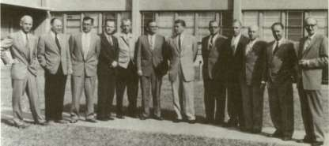
The heart of the "von Braun team" that led the Army's space efforts at ABMA before transfer to NASA: left to right: Dr. Ernst Stuhlinger, Director, Research Projects Office; Dr. Helmut Hoelzer, Director, Computation Laboratory; Karl L. Heimburg, Director, Test Laboratory; Dr. Ernst D. Geissler, Director, Aeroballis-tics Laboratory; Erich W. Neubert, Director, Systems Analysis and Reliability Laboratory; Dr. Walter Haeussermann, Director, Guidance and Control Laboratory; Dr. Wernher von Braun, Director, Development Operations Division; William A. Mrazek, Director, Structures and Mechanics Laboratory; Hans Hueter, Director, System Support Equipment Laboratory; Dr. Eberhard F. M. Rees, Deputy Director, Development Operations Division; Dr. Kurt Debus, Director, Missile Firing Laboratory; and H. H. Maus, Director Fabrication and Assembly Engineering Laboratory.
made NASA a bit anxious because realistic planning was difficult as long as no firm booster configuration was drawn up. T. Keith Glennan expressed his concern in a memo to Roy Johnson at ARPA within a week of the publication of the "Saturn System Study." An early decision on Saturn upper stages was needed, he said, and he urged Johnson toward an early resolution of the issue. 24
ARPA's own plans for the Saturn booster remained tied to a combination with Centaur, to place "very heavy satellites in high orbits, especially for communications purposes." In testimony before Congress in late March, Johnson described the ARPA program for such satellites in equatorial orbits for global communications. More than that, he emphasized development of the Saturn cluster as a number one priority because it would serve a number of vehicle requirements for the next two years, not only for communications but also as an all-purpose space "truck" for a variety of missions, including launches of manned orbital satellites. 25
THE ABMA TRANSFER
The all-purpose Saturn suddenly ran into stiff opposition within the Department of Defense. Herbert York, Director of Department of Defense Research and Engineering, announced that he had decided to
AEROSPACE ALPHABET: ABMA, ARPA, MSFC
terminate the Saturn program. In a memorandum to Johnson dated 9 June 1959, York rebuffed an ARPA request for additional funds. "In the Saturn case," York said, "I consider that there are other more urgent cases requiring support from the limited amount. . . which remains uncommitted." York's reasoning apparently stemmed from a position taken by other Eisenhower Administration advisors that the requirements of the Department of Defense for launching military communications satellites would be achieved more effectively by relying on existing ICBM boosters. Saturn had always been touted as the military's booster for such missions, so it did not seem to be needed any more. Saturn was a "costly operation being conducted at ABMA," York wrote, and advised Johnson, "I have decided to cancel the Saturn program on the grounds there is no military justification." 26 York's bombshell came as a real blow to ABMA, especially since the first H-l engines for the Saturn cluster had begun arriving in Huntsville some weeks before, in April. 27
With NASA programs tied closely to the Saturn, as indicated in the earlier Rosen report, the launch vehicle staff in Washington immediately got to work to head off the York cancellation order as soon as they heard the news. Collaborating with Saturn supporters from within the Department of Defense, Rosen and Richard Canright from ARPA drafted a crucial memorandum in defense of the clustered booster program. They realized that Saturn as an Army project was in trouble apparently because the Army had no specific use for it. At that time, neither did NASA, although Rosen and Canright felt that the range of potential missions cited in the prior Rosen report offered, in the long run, enough justification to keep Saturn alive. Rosen and others in NASA were completely captivated by Saturn's promise. "We all had gut feelings that we had to have a good rocket," he said, emphasizing the appeal of Saturn's size. Rosen felt that he had "lived all his life with too small a launch vehicle." 28
Thus, in a tense three-day meeting, 16-18 September 1959, York and Dryden co-chaired a special committee to review Saturn's future and discuss the roles of the Titan C boosters and the Nova. Committee members included representatives from the Army, Air Force, and NASA as well as Canright from ARPA. After hours of intensive presentations and discussion, the Saturn backers finally carried the debate, but not without some conditions. Under York's prodding, it was agreed to start discussions to transfer ABMA and the Saturn project to NASA. York also insisted that such a transfer could be accomplished only with the Administration's guarantee for supplemental funding in support of Saturn. 29
Years later, reviewing the issue of Saturn's cancellation, York elaborated on his reasoning. For one thing, there seemed to be a strong feeling within the Department of Defense that Saturn tended to siphon off money, not only from important military projects in ABMA but from
STAGES TO SATURN
the Air Force as well. The Secretary of Defense twice turned down requests for a DX (priority) rating for Saturn, once in December 1958 and again in May 1959. Moreover, York felt that Saturn was simply too big for any military mission, and that included men in space. Big boosters of the Saturn class should be NASA's responsibility, he reasoned, because there was no urgent military application and because of York's own reading of the Space Act of 1958 and his understanding of Eisenhower's views on the matter. In the meantime,York apparently agreed to continue adequate funding of Saturn through ARPA until the issue of ABMA's transfer to NASA was resolved. As for the von Braun team at Hunstville, York recalled that von Braun himself "made it very clear in a face-to-face discussion in the Pentagon that he would go along only if I allowed Saturn to continue." 3
The near loss of the Saturn booster was a sobering experience. This close brush with disaster underscored NASA's problems in securing boosters developed and produced by other agencies; many in NASA now believed they had to have control of their own launch vehicles. In fact, York had already favored the transfer of ABMA, with responsibility for Saturn, to NASA. Late in 1958, when Glennan and Deputy Secretary of Defense Donald A. Quarles had proposed such a transfer, the Army and ARPA had strongly opposed the move. 31 The ABMA transfer continued to beguile top NASA executives, and Hjornevik emphatically urged action on the matter. In a memo to Glennan late in January 1959, Hjornevik argued that the role of ABMA as consultant and supplier was operable as long as NASA was content merely to buy Redstone rockets in the Mercury program, but the rapid changes in an ambitious NASA launch program revealed a gap in the agency's capabilities, and Hjornevik left no doubt that NASA needed ABMA's competence. Hjornevik phrased his recommendations in no uncertain terms. "I for one believe we should move in on ABMA in the strongest possible way," he declared. "It is becoming increasingly clear that we will soon desperately need this or an equivalent competence." Hjornevik cited NASA's needs in managing the national booster program, especially the engines and "the big cluster," and the suggested joint funding as a means to "achieve a beachhead on the big cluster." 32
Roy Johnson, speaking for ARPA, emphasized the need for keeping the von Braun team together, particularly if a transfer occurred. "At Huntsville we have one of the most capable groups of space technicians in the country," Johnson said during congressional testimony in March 1959. "I think that it is a unique group ... a national resource of tremendous importance." Then he added, "ABMA team is the kind of group that, if somebody had planned 10 years ago to create it, could not have been done better." Although Johnson told the congressional committee that he could work with ABMA in or out of the Department of Defense, he personally preferred it in the Department of Defense.
AEROSPACE ALPHABET: ABMA, ARPA, MSEC
Among other things, he commented, he was not optimistic about lunar payloads taking precedence over the Saturn's role as a booster for military satellites.
NASA's lively interest in Saturn and the Huntsville group continued to mount. In mid-April, Glennan called a meeting of Dryden, Hyatt, Hjornevik, and others, including Abe Silverstein, Director of Space Flight Development. The NASA executives got together one Friday to assess the events of the past week and, among other things, to consider the question of Saturn. In the course of the discussion, the participants reached a consensus that the highly competent ABMA group had the best qualifications to develop the total Saturn vehicle, and they should be encouraged to forge ahead. At the same time, NASA should keep a sharp eye on its own interests in regard to Saturn and build a "significant financial and management role." A distinct takeover move, previously pushed by Hjornevik, did not take place for several months, simply because, as Glennan himself observed, NASA lacked a specific mission for Saturn that would justify wrenching the booster away from ARPA. 34
But the days of Saturn's ties to ARPA were numbered. After letting the issue simmer on a back burner most of the year, York raised the transfer issue again in the autumn of 1959, and this time got the support of both the Secretary of Defense and President Eisenhower. 35 Given the inclinations of the NASA hierarchy, ABMA's transfer from ARPA became inevitable. NASA's own requirements for a booster the size of the Saturn had been made more explicit as a result of the Research Steering Committee on Manned Space Flight, chaired by Harry J. Goett of NASA's Ames Research Center. The Goett committee, formed in the spring, had considered NASA goals beyond the Mercury program, and during the summer a circumlunar mission emerged as the principal item in NASA's long-range planning. A manned lunar landing required a much larger booster—Saturn. With potential mission and booster requirements finally outlined, satisfying Glennan's criteria to have a specific mission for the launch vehicle, total NASA responsibility for Saturn was obviously needed. 36
The transfer of ABMA, Saturn, and the von Braun team was phased over a period of nearly six months. NASA's technical direction of Saturn dated from a memorandum signed by Glennan on 21 October 1959 and by the acting Secretary of Defense, Thomas Gates, on 30 October, and approved by Eisenhower on 2 November. The document affirmed continuing joint efforts of NASA and the Department of Defense in the development and utilization of ICBM and IRBM missiles as space vehicles. Pointing out that there was "no clear military requirement for super boosters," the memorandum stated that "there is a definite need for super boosters for civilian space exploration purposes, both manned and unmanned. Accordingly, it is agreed that the responsibility for the super booster program should be vested in NASA."
STAGES TO SATURN
Specifically, the core of ABMA's Development Operations Division would be shifted to NASA—Saturn personnel, facilities, equipment, and funds. Both sides agreed on the unique talent of the von Braun team and the need to keep it intact. "The Department of Defense, the Department of the Army, and NASA, recognizing the value of the nation's space program of maintaining at a high level the present competence of ABMA, will cooperate to preserve the continuity of the technical and administrative leadership of the group." 37
The process of coordinating the administrative, technical, and physical transfer of the Saturn program progressed during the early months of 1960. To help provide guidelines and avoid as much chaos as possible, NASA called on McKinsey and Company, a private management consulting firm with offices in several major U.S. cities, including Washington. McKinsey and Company had helped NASA set up its own organization in 1958 and was thereby familiar with the agency's headquarters structure and personnel. By March 1960, the move was complete. On the 16th of the month, NASA assumed both administrative and technical direction of the Saturn program. The Goett committee, having wound up its work in December 1959, had pointed NASA in the direction of lunar-oriented missions as a goal. The transfer of the von Braun team, completed in the spring of 1960, gave NASA the expertise and a vehicle program to perform the task. 38
In the process of shedding ABMA's initials, the von Braun team now acquired a new set. By a presidential executive order on 15 March 1960, the space complex within the boundaries of Redstone Arsenal became the George C. Marshall Space Flight Center (MSFC). On 1 July 1960, Major General August Schomburg, commander of the Army Ordnance Missile Command, formally transferred missions, personnel, and facilities to von Braun, as Director of MSFC. Official dedication took place on 8 September with Mrs. George C. Marshall and President Dwight D. Eisenhower heading the list of distinguished visitors. In his public remarks, President Eisenhower noted Marshall's military career, his distinguished service as the Secretary of State, and the award to Marshall of the Nobel Peace Prize, the only professional soldier to have received it. "He was a man of war, yet a builder of peace," proclaimed Eisenhower. These sentiments fittingly paralleled the evolution of MSFC, with its origins in the Army Ballistic Missile Agency. In a brief, but moving ceremony, Mrs. Marshall unveiled a red granite bust of her late husband. Then von Braun escorted Eisenhower on a tour of the site, including a close-up inspection of the Saturn booster under construction. 39
UPPER STAGE STUDIES
During the months in which their relocation was being debated, ABMA personnel in Huntsville were still absorbed in the exercise of
AEROSPACE ALPHABET: ABMA, ARPA, MSFC
trying to determine the configuration of upper stages for their multiengine booster. Design drawings of Saturn B and Saturn C studies during the first few months of 1959 showed clustered tank-and-engine first stages of 6.5 meters diameter and various combinations of upper stages of 6.5-meter and 3-meter diameters towering as high as 76 meters. The use of new hardware was apparently not contemplated; given ARPA's guidelines for economy in the program, a more realistic possibility was to add upper stages that used Titan or Atlas ICBM vehicles fitted directly to the clustered tankage and engines. By the spring of 1959, both ABMA and ARPA agreed on the feasibility of Titan and Atlas versions. ARPA advisors leaned more toward a decidedly hybrid concept in which a modified Titan second stage was used in combination with a modified Centaur third stage from the Atlas vehicle. Yet another twist in the evolution of Saturn upper stages came in July, when DOD's Director of Research and Engineering issued a new directive to both the Air Force and ARPA to consider the joint development of a second-stage vehicle keyed to the Air Force Dyna-Soar project, since the Saturn second stage and the Dyna-Soar booster appeared to be similar in design and concept. So ARPA ordered work on the Titan upper-stage studies to stop, pending further studies on this new DOD directive, although R&D work on the first-stage cluster forged ahead through the summer. 40
The decision to halt work in mating existing military missiles to the Saturn came as something of a relief to ABMA. Using such off-the-shelf hardware definitely narrowed the flexibility of mission planning. As a second-stage booster, it turned out that Jupiter just did not have the muscle, and the Atlas and Titan, although adequate in thrust for their ground-launch ICBM role, lacked performance capabilities as upper-stage vehicles to be ignited at altitude. Moreover, their 3-meter diameters limited their growth potential in relation to the possibilities of the far bigger Saturn. "In comparison," Willy Mrazek said, "this was like
Dedication of the George C. Marshall Space Flight Center. In the foreground with the bust of General Marshall are NASA Administrator Glennan, President Eisenhower, and Mrs. Marshall.
IIW
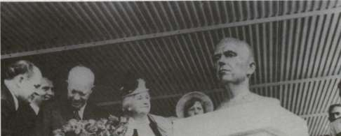
STAGES TO SATURN
considering the purchase of a 5-ton truck for hauling a heavy load and finally deciding to merely load a wheelbarrow full of dirt." 41 As a result of new evaluation studies that followed cancellation of work on the Titan as an upper stage, ARPA decided to forego requirements to employ existing hardware, and ABMA confidently embarked on a new series of design concepts for Saturn upper stages, utilizing large diameters that offered increased mission flexibility and payload capability. Undertaken in the fall of 1959, these new "Saturn System Studies," as they were called, were conducted with an eye to NASA requirements in particular. 42
The last months of 1959 could be called a watershed period for NASA in many respects. The agency had acquired the von Braun team and sharpened the focus on upper stages for a multistage vehicle. In December, a critical judgment on the application of high-energy propel-lants for Saturn's upper stages was in debate. The issue of high-energy propellants centered on liquid hydrogen in combination with liquid oxygen—and the use of liquid hydrogen (LH 2 ) did not have the wholehearted support of von Braun or his staff at Huntsville.
At NASA Headquarters, on the other hand, Abe Silverstein and several others were convinced that LH 2 was the key to future Saturn success. Silverstein had joined NACA in 1929, and worked in wind tunnels at the Langley Laboratory. When the Lewis Propulsion Laboratory was formed in Cleveland, Ohio, in 1943, Silverstein joined the new organization and became its Associate Director in 1952. He had come to Washington in 1958 to become Director of Space Flight Development. For the next three years, Silverstein played an important role in policy decisions at NASA Headquarters before returning to Cleveland as Director of Lewis Research Center.
NASA had inherited an LH 2 development program as a result of NACA work carried on at Lewis Research Center throughout the 1950s; the work culminated in the successful test of a 89 000-newton (20 000-pound) thrust LH 2 engine and propellant injector in the late 1950s. The Lewis LH 2 group, led by Abe Silverstein, had been convinced of the practicality of LH 2 by subsequent successful test runs. The research at Lewis—and its successful prototype engine design—encouraged Silverstein to push hard for LH 2 engines in Saturn's upper stages. 43 The first practical application of the LH 2 engine was planned as a high-energy stage, named Centaur, for Atlas or Titan. The plan stemmed from an ARPA directive to the U.S. Air Force's Air Research and Development Command. During congressional testimony in March 1959, Roy Johnson noted early plans to incorporate an LH 2 -fueled stage (apparently the Centaur, or a close derivative) on the Saturn vehicle. Continuing research was solving problems of pumping LH 2 in large quantities, he explained, and he expected a breakthrough in propulsion for use in a second or third stage. Johnson's enthusiasm for an LH 2 vehicle was unbounded. "It is a miracle stage as I see it," he declared. 44 By the summer of 1959, the LH 2 rocket
AEROSPACE ALPHABET: ABMA, ARPA, MSFC
also had support at NASA Headquarters, where Hyatt was corresponding with Silverstein about it. 45
Just before the Christmas holidays, the stage was set for a high-level conference at Headquarters to determine the basic configuration of the multistage Saturn. On 17 November, Associate Administrator Richard Horner told the Director of Space Flight Development to organize a study group to make additional recommendations concerning the transfer of the von Braun team to NASA, "to prepare recommendations for guidance of the development of Saturn, and specifically, for selection of upper-stage configurations." A "Saturn Vehicle Team" was organized; it comprised representatives from NASA, the Air Force, ARPA, ABMA, and the Office of the Department of Defense Research and Engineering (ODDR&E). Chaired by Abe Silverstein, the seven-man group was known as the "Silverstein Committee." In addition to Silverstein, the NASA representatives included Hyatt and Eldon Hall, and the other members were Colonel N. Appold (USAF), T. C. Muse (ODDR&E), G. P. Sutton (ARPA), and Wernher von Braun (ABMA). 46
When the Silverstein committee convened in December, not everyone was in favor of the untried LH 2 technology because LH 2 was widely thought to be too volatile and tricky to handle. Von Braun in particular expressed doubts about LH 2 even though the Saturn-Atlas combination had the Centaur's LH 2 system in the Atlas final stage, and he was definitely opposed to a new LH 2 Saturn second stage. On the other hand, several influential committee members made a forceful case for LH 2 . Hyatt was already for it; Eldon Hall, not long before the committee had been organized, had analyzed the performance of launch vehicles using various combinations of propellants. Using his background in the work previously done at Lewis, Silverstein argued with all the persuasive powers at his command. It was just not logical, Silverstein emphasized, to develop a series of vehicles over a 10-year period and rely on the limited payload capability of conventionally fueled boosters with liquid oxygen and kerosene-based propellants. He was convinced that the use of LH 2 in the upper Saturn stages was inherently sound, and his conviction was the major factor in swaying the whole committee, von Braun included, to accept LH 2 boosters in the Saturn program. "Abe was on solid ground," von Braun acknowledged later, "when he succeeded in persuading his committee to swallow its scruples about the risks of the new fuel." 4 ^
Next, von Braun had to convince his colleagues back at Huntsville. Before the committee adjourned, von Braun telephoned the Redstone Arsenal to talk to Mrazek, one of the key team members who had come with him from Germany, and the two men brainstormed the possibilities.
Abe Silverstein, NASA's Director of Space Flight Development, is shown touring a rocket engine facility.
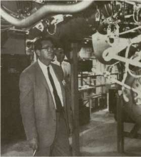
As Mrazek recalled his phone conversation, von Braun made the following points: The Saturn could not use existing hardware for the upper stages—it needed an original design; the Saturn plan should stress the new hydrogen technology and the Centaur's engines; and the hydrogen upper stage would need six engines. This final aspect could have been controversial because some experts still harbored strong doubts about the use of eight conventional, though proven, rocket engines for the first-stage booster. There would be even more carping about a half dozen new and untried engines burning exotic liquid hydrogen. But von Braun said he was not overly concerned about the cluster of six hydrogen engines, since at least a dozen Centaur launches were scheduled before the first Saturn would have to go up. The ABM A group could profit from whatever trials and tribulations the Centaur engines developed, with plenty of time to iron out any problems before the first Saturn left the launch pad. In short, von Braun was confident of success with the new hydrogen technology, and Mrazek agreed; so the scenario was finally set. 48 (See chapter 5 for further details of LH 2 technology.)
AEROSPACE ALPHABET: ABMA, ARPA, MSEC
In the spring of 1960, as the word of NASA's decision to rely on the novel propellant combination for Saturn reached the public, Eldon Hall and Francis Schwenk, from the Office of Launch Vehicle Programs at NASA Headquarters, outlined the reasons for the choice. The higher vehicle performance required for advanced missions simply required higher energy propellants, they explained. The staging of several rockets using conventional propellants rapidly reached optimum design limits, because advanced missions and payloads required more thrust and more engines—which meant heavier rockets with bigger tanks and engines and proportionately less efficiency in design and capability. On the other hand, high-energy propellants promised the best results for advanced missions requiring high escape velocities. "The choice of high-energy upper stages for Saturn is based almost entirely on the fact that, with present knowledge of stage construction, at least one of the upper stages must use high-energy propellants if certain desirable missions are to be accomplished with this vehicle," Hall and Schwenk emphasized. So "the Saturn program was established for early incorporation of a high-energy second stage into the vehicle system." 4
In the course of the deliberations of the Silverstein committee, three types of missions for the Saturn vehicle emerged. First priority was given to lunar and deep-space missions with an escape payload of about 4500 kilograms. Next in order of priority came satellite payloads of about 2250 kilograms in a 24-hour equatorial orbit. Finally, the committee considered the possibility of manned missions involving the Dyna-Soar program, in which a two-stage vehicle would be used to put 4500 kilograms into low orbit. On the basis of these assumptions, the committee stressed the evolutionary pattern of Saturn development and its potential for a variety of future roles. "Early capability with an advanced vehicle and possibilities for future growth were accepted as elements of greatest importance in the Saturn vehicle development."
Once more, the Saturn Vehicle Team reviewed the wide array of potential configurations, reduced the number of choices to six, and began to weed out the least promising. The A-l version, with modified Titan and Centaur upper stages, would provide the earliest flight schedules and lowest costs with existing hardware. It was rejected because it could not meet lunar and satellite payload requirements and because the slender 3-meter^diameter upper stages were considered to have potential structural weaknesses. The A-2 type, with a cluster of Intermediate Range Ballistic Missiles (IRBMs) in the second stage, also saved money and promised early availability but did not have the capability for some of the planned missions. A proposed B-l vehicle met all mission requirements but needed a totally new stage with conventional fuels. The B-l type was expensive, would take a lot of time to develop, and had some shortcomings for advanced missions.
STAGES TO SATURN
Moreover, all first three candidates needed high-energy propellants in the top stage. So why restrict the promise of LH 2 to the top stage alone? "If these propellants are to be accepted for the difficult top-stage applications," the committee concluded, "there seem to be no valid engineering reasons for not accepting the use of high-energy propellants for the less difficult application to intermediate stages." The Saturn family of rockets finally envisioned by the Silverstein committee included C-l, C-2, and C-3, all with LH 2 in the upper stages. The three-stage C-l met the mission requirements and used Centaur engines in the LH 2 upper stages. The second stage had four uprated Centaur engines, designated the S-IV stage, and the S-V top stage was the Centaur itself, with two engines. The hop-scotch numbering occurred because of the "building block" concept, in which hardware was used as available, the concept was tested, and then newer and advanced stages were incorporated in the next major configuration. During C-l development and flight, for example, a new S-III stage for Saturn C-2 would be prepared with the use of a newer, more powerful generation of LH 2 engines. As the development and flight test of Saturn C-2 proceeded, the S-II stage would be worked up with four of the newer LH 2 engines. The final C-3 vehicle would stack all the various stages together as a five-stage booster. Further, the Saturn Vehicle Team suggested that the first stage of the C-3 model might even include an F-l engine to replace four of the cluster of eight uprated H-l engines.
In its final recommendations for the phased development of Saturn C-l through C-3, the Silverstein committee emphasized the building block concept keyed to the Saturn first-stage cluster, along with hydrogen-oxygen propellants in all the upper stages. Proceeding from the Centaur technology under development at the time, the committee urged immediate development of a new LH 2 engine and initiation of design studies for the S-II and S-III stages to use the more powerful engines. 50
PRIORITIES AND GOALS
With in-house capability established, in the form of the ABMA transfer, and with immediate vehicle guidelines established as a result of the Silverstein committee, NASA now proceeded to refine its priorities and goals.
The ultimate goal was a lunar landing. The Director of Lunar Vehicles, Donald R. Ostrander, stated in a planning conference for NASA and industry in January 1960: "The principal mission which we have used as an objective in these planning studies has been that of a manned landing on the moon and return to earth." 01 Looking ahead, NASA executives told Congress during hearings late in the same month that the agency planned a circumlunar flight by 1970 and a manned
S-V (CENTAUR) WO 15K ENGINES
A
S-IV LOX/LH / FOUR 15-20K ' ENGINES
S-l LOX/RP
EIGHT H-1
ENGINES
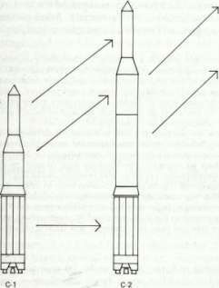
S-IV LOX/LH FOUR 15-20K ENGINES
S-lll LOX/LH TWO 150-200K ENGINES
S-ll LOX/LH FOUR 150-200K ENGINES
S-l LOX/RP T = 2.0+ M
C-3
STAGES TO SATURN
lunar landing soon after. The agency also estimated the cost at $13 to $15 billion over the coming decade, and Associate Administrator Horner explained the need to look so far ahead and plan a budget:
Virtually all of our key programs presume a scheduled progress in launch vehicle and spacecraft development. These major developmental tasks frequently require time periods of 5 to 6 years for completion and can be substantially longer under given circumstances of technological progress and research availability.
Thus, although the usefulness of highly tentative plans might be questioned, long-term objectives, on the order of 10 years in advance of today's program, are essential to keep our development activities properly focused.
The actions we initiate this year and next in the vehicle development program will have a determining influence on our capabilities for meeting national objectives in the last half of this decade and even beyond. Accordingly, we have developed a 10-year plan, one which we expect to modify from year to year on the basis of realized experience, development progress, and resource availability. It is formulated around the requirement that its implementation must so utilize the resources of the United States that our national role as a leader in the aeronautical and space sciences and their technologies is preserved and steadily enhanced. We have also assumed that a steady growth in the scale and intensity of our efforts, especially for the next 5 years, is an essential basis for consistent and fruitful efforts in meeting this requirement. 02
As NASA prepared to forge ahead on its 10-year program in 1960, the agency enjoyed increased support from Eisenhower, and Glennan won an important advantage for the Saturn program in terms of a high priority endorsement. "As we have agreed," the President wrote to Glennan on 14 January, "it is essential to push forward vigorously to increase our capability in high thrust space vehicles." In the same directive to Glennan, Eisenhower gave his authorization to prepare an additional funding request for the balance of fiscal 1960 and 1961, "to accelerate the super booster program," and to use overtime as needed, "consistent with my decision to assign a high priority to the Saturn development." Four days later, on 18 January, the rating for highest national priority (DX rating) became official, authorizing the use of overtime wages and giving Saturn precedence for materials and other program requirements. 53
The configurations of the Saturn family were still in a state of flux, however, and the Nova was still a probability in the NASA scheme. Straightening out the lines of development and mission application became an issue that absorbed personnel in program studies and committee meetings for another two and a half years. Although the Saturn Vehicle Team did not mention Nova in their recommendations, the towering booster figured prominently in plans for manned lunar landings. During a meeting on advanced propulsion requirements at NASA Headquarters in early June 1960, the Huntsville group discussed Nova "for manned lunar landing and return," in a configuration that
AEROSPACE ALPHABET: ABMA, ARPA, MSEC
would boost a 81 600-kilogram payload to escape velocity and return 6800 kilograms to Earth. The vehicle featured eight of the 6 700 000-newton (1.5-million-pound) thrust engines in the first stage, four LH 2 engines in the second stage, and one LH 2 engine each in the third and fourth stages. Data for a C-2 launch with assisted boost from Minuteman missile solid-fuel strap-ons were also discussed, although "Marshall people were not enamored with the idea of any changes to the C-2." 54 Therefore, the Saturn configurations remained keyed to liquid propulsion engines, especially the LH 2 propulsion systems. NASA planners considered using the Saturn "C" series of vehicles for manned space stations, manned circumlunar missions, and unmanned lunar and planetary probes. Manned lunar excursions, Homer Stewart reminded NASA Administrator Glennan, would definitely require the application of the 6 700 000-newton (1.5-million-pound) thrust engine (known as the F-l) used in a cluster, probably in a Nova vehicle, and if the LH 2 program developed any snags, he warned, the Saturn program would quickly find itself in dire trouble. 55
Toward the end of 1960, NASA planners decided it was time to review the space program once again and make more specific recommendations for future development in the Saturn and Nova projects. Early in November, NASA laid out its milestone for the next 10 years. "A ten-year interval has no special significance," the report asserted, "yet it is considered to be an appropriate interval since past experience has shown that the time required to translate research knowledge into operationally effective systems in similar new fields of technology is generally of this order." This time span permitted opportunity to establish mission goals and plans and coordinate the development of spacecraft and appropriate booster hardware. Apparently there was already some confusion about terminology, since the "Proposed Long Range Plan," as drafted by the Headquarters Office of Program Planning & Evaluation, included some definitions. "Launching vehicle" meant a first-stage booster and upper stages to inject a spacecraft into proper trajectory. "Spacecraft" included the basic payload as well as guidance and its own propulsion systems for trajectory modifications following injection. The term "space vehicle" encompassed the entire system— launching vehicle plus spacecraft. 06
With definitions thus established, the document discussed the major launch vehicles, or boosters, under NASA cognizance: C-l, C-2, and Nova. The C-l and C-2 descriptions closely followed the analysis prepared by the Silverstein committee the previous year, the descriptions reaffirming the building block concept with the C-l as a three-stage vehicle and the C-2 as a four-stage booster including a newly developed second stage with a cluster of four 890 000-newton (200 000-pound) thrust hydrogen engines. The R&D for the Centaur and the new hydrogen engines appeared to be the biggest gamble in the long-range plan. The decision to use LOX-LH 2 engines in C-l and C-2 upper stages "was based on a calculated risk," the report stated, that such engine technology
STAGES TO SATURN
would come along smoothly enough to keep the building block sequence on schedule. By FY 1964-1967, according to the "Proposed Long Range Plan," the C-l should be operational in support of preliminary Apollo orbital missions, as well as planetary probes and as a test bed for advanced technology electron engines and nuclear engines. The C-2 should be ready somewhat later to place twice the payload into orbit, as well as for launching deep-space probes. 57
As for the Nova, "its primary mission is to accomplish manned lunar landings," the plan said. Nova was admittedly still in the conceptual stage, since its size and ultimate configuration depended on space environmental research, progress in advanced chemical engines such as the F-l, and potential development of nuclear engines. The Nova, with an F-l cluster combination to total 53 million newtons (12 million pounds) of thrust in the first stage, seemed to be the most feasible, and the Nova booster could make a manned lunar landing mission by direct staging to the moon and return or by a series of launches to boost hardware into low orbit for a series of rendezvous operations, building up a space vehicle in low orbit for the final lunar mission. 58